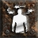

 Stun 95.35% (41.0)
Popular builds include:
21.61% of Barbarian's invest heavily in Whirling Axes, Double Swing, Battle Cry, Grim Ward, Battle Orders
16.58% of Barbarian's invest heavily in Whirling Axes, Double Swing, Battle Cry, Battle Command, Battle Orders
10.55% of Barbarian's invest heavily in Whirling Axes, Battle Cry, Double Swing, Whirlwind, Edged Weapon Mastery
9.55% of Barbarian's invest heavily in Pole Weapon Mastery, Grim Ward, Whirlwind, Battle Orders, Shout
8.54% of Barbarian's invest heavily in Battle Cry, War Cry, Taunt, Battle Command, Battle Orders
7.54% of Barbarian's invest heavily in Whirlwind, Battle Orders, Blunt Weapon Mastery, Battle Command, Shout
4.52% of Barbarian's invest heavily in Battle Orders, Battle Command, Shout, Grim Ward, Edged Weapon Mastery
4.52% of Barbarian's invest heavily in Frenzy, Edged Weapon Mastery, Double Swing, Increased Stamina, Battle Orders
4.02% of Barbarian's invest heavily in Whirlwind, Blunt Weapon Mastery, Whirling Axes, Double Swing, Battle Command
3.52% of Barbarian's invest heavily in Bash, Ethereal Throw, Thrown Weapon Mastery, Battle Orders, Battle Command
3.52% of Barbarian's invest heavily in Grim Ward, Battle Orders, Leap Slam, Blunt Weapon Mastery, Cleave
3.02% of Barbarian's invest heavily in Whirlwind, Pole Weapon Mastery, Battle Orders, Shout, Iron Skin
2.51% of Barbarian's invest heavily in Pole Weapon Mastery, Whirling Axes, Whirlwind, Battle Command, Battle Cry
Other Skills:
 Whirlwind 95.35% (68.0)
Whirlwind 95.35% (68.0) Leap Slam 97.67% (61.0)
Leap Slam 97.67% (61.0) Battle Command 100.0% (60.0)
Battle Command 100.0% (60.0) Blunt Weapon Mastery 51.16% (59.0)
Blunt Weapon Mastery 51.16% (59.0) Natural Resistance 100.0% (50.0)
Natural Resistance 100.0% (50.0) Iron Skin 100.0% (44.0)
Iron Skin 100.0% (44.0)
Skills: Double Swing:20, Whirling Axes:20, Battle Cry:20, Grim Ward:12, Whirlwind:8, Bash:1, Leap Slam:1, Ethereal Throw:1, Stun:1, Concentrate:1, Frenzy:1, Cleave:1, Edged Weapon Mastery:1, Pole Weapon Mastery:1, Blunt Weapon Mastery:1, Thrown Weapon Mastery:1, Increased Stamina:1, Iron Skin:1, Increased Speed:1, Natural Resistance:1, Puncture:1, Counter Attack:1, Howl:1, Find Potion:1, Taunt:1, Shout:1, Find Item:1, Battle Orders:1, War Cry:1, Battle Command:1
Equipment: ring: Bul-Kathos' Wedding Band x1, ring: Raven Frost x1, belt: String of Ears x1, helmet: Arreat's Face x1, gloves: Laying of Hands x1, boots: Vidala's Fetlock x1, Left hand: Warshrike x1, Left hand: Grief x1, Offhand: Heart of the Oak x1, Offhand: Grief x1, amulet: Highlord's Wrath x1, body: Enigma x1
Mercenary: Act 2 Desert Mercenary - Steel Shade, Shaftstop, Tomb Reaver
Skills: Double Swing:20, Whirling Axes:20, Battle Cry:20, Grim Ward:20, Whirlwind:6, Bash:1, Leap Slam:1, Stun:1, Concentrate:1, Frenzy:1, Cleave:1, Edged Weapon Mastery:1, Increased Stamina:1, Iron Skin:1, Increased Speed:1, Natural Resistance:1, Puncture:1, Counter Attack:1, Howl:1, Find Potion:1, Taunt:1, Shout:1, Find Item:1, Battle Orders:1, Battle Command:1
Equipment: boots: Gore Rider x1, belt: Arachnid Mesh x1, body: Enigma x1, gloves: Laying of Hands x1, amulet: Highlord's Wrath x1, helmet: Arreat's Face x1, ring: Raven Frost x1, ring: Wisp Projector x1, Left hand: Echoing Cinquedeas of Slaying x1, Left hand: Breath of the Dying x1, Offhand: Echoing Balanced Knife x1, Offhand: Silence x1
Mercenary: Act 2 Desert Mercenary - Steel Shade, Fortitude, Pride
Skills: Double Swing:20, Whirling Axes:20, Battle Cry:20, Grim Ward:20, Bash:1, Leap Slam:1, Stun:1, Concentrate:1, Whirlwind:1, Cleave:1, Edged Weapon Mastery:1, Pole Weapon Mastery:1, Increased Stamina:1, Iron Skin:1, Increased Speed:1, Natural Resistance:1, Puncture:1, Counter Attack:1, Howl:1, Find Potion:1, Taunt:1, Shout:1, Find Item:1, Battle Orders:1, Battle Command:1
Equipment: helmet: Arreat's Face x1, boots: Gore Rider x1, belt: String of Ears x1, amulet: Highlord's Wrath x1, body: Fortitude x1, ring: Carrion Wind x1, gloves: Storm Knuckle x1, Left hand: The Reaper's Toll x1, Left hand: Grief x1, Offhand: Stormshield x1
Mercenary: Act 5 Barbarian - Lawbringer
Skills: Double Swing:20, Whirling Axes:20, Battle Cry:20, Grim Ward:19, Pole Weapon Mastery:5, Bash:1, Leap Slam:1, Stun:1, Concentrate:1, Whirlwind:1, Cleave:1, Edged Weapon Mastery:1, Increased Stamina:1, Iron Skin:1, Increased Speed:1, Natural Resistance:1, Puncture:1, Counter Attack:1, Howl:1, Find Potion:1, Taunt:1, Shout:1, Find Item:1, Battle Orders:1, Battle Command:1
Equipment: ring: Raven Frost x1, ring: Eagle Grip x1, amulet: Mara's Kaleidoscope x1, gloves: Steelrend x1, helmet: Arreat's Face x1, belt: Verdungo's Hearty Cord x1, boots: Gore Rider x1, Left hand: Echoing War Sword of the Ox x1, Left hand: Breath of the Dying x1, Offhand: Echoing War Sword of Lightning x1, body: Fortitude x1
Mercenary: Act 2 Desert Mercenary - Smoke, Tal Rasha's Horadric Crest, The Reaper's Toll
Skills: Double Swing:20, Whirling Axes:20, Battle Cry:20, Grim Ward:20, Edged Weapon Mastery:5, Bash:1, Leap Slam:1, Stun:1, Concentrate:1, Whirlwind:1, Cleave:1, Increased Stamina:1, Iron Skin:1, Increased Speed:1, Natural Resistance:1, Puncture:1, Counter Attack:1, Howl:1, Find Potion:1, Taunt:1, Shout:1, Find Item:1, Battle Orders:1, Battle Command:1
Equipment: boots: Shadow Dancer x1, gloves: Wraithra Hand x1, amulet: Angelic Wings x1, helmet: Arreat's Face x1, ring: Angelic Halo x1, belt: String of Ears x1, Left hand: Echoing Throwing Spear of Carnage x1, Left hand: Breath of the Dying x1, Offhand: Echoing War Sword of Quality x1
Mercenary: Act 3 Eastern Sorceror - No equipment
Skills: Double Swing:20, Whirling Axes:20, Battle Cry:19, Grim Ward:18, Bash:1, Leap Slam:1, Stun:1, Concentrate:1, Whirlwind:1, Cleave:1, Blunt Weapon Mastery:1, Increased Stamina:1, Iron Skin:1, Increased Speed:1, Natural Resistance:1, Puncture:1, Counter Attack:1, Howl:1, Find Potion:1, Taunt:1, Shout:1, Find Item:1, Battle Orders:1, Battle Command:1
Equipment: belt: Immortal King's Detail x1, gloves: Immortal King's Forge x1, body: Immortal King's Soul Cage x1, boots: Immortal King's Pillar x1, ring: Raven Frost x2, amulet: Furious Amulet of the Titan x1, Left hand: Mang Song's Lesson x1, Left hand: Immortal King's Stone Crusher x1, helmet: Immortal King's Will x1
Mercenary: Act 2 Desert Mercenary - Veil of Steel
Skills: Double Swing:20, Whirling Axes:20, Battle Cry:20, Grim Ward:15, Battle Command:10, Bash:1, Leap Slam:1, Stun:1, Concentrate:1, Whirlwind:1, Cleave:1, Edged Weapon Mastery:1, Increased Stamina:1, Iron Skin:1, Increased Speed:1, Natural Resistance:1, Puncture:1, Counter Attack:1, Howl:1, Find Potion:1, Taunt:1, Shout:1, Find Item:1, Battle Orders:1
Equipment: helmet: Arreat's Face x1, ring: Bul-Kathos' Wedding Band x1, ring: Wisp Projector x1, belt: Arachnid Mesh x1, body: Enigma x1, amulet: Furious Amulet of Performance x1, boots: Gore Rider x1, gloves: Laying of Hands x1, Left hand: Oath x1, Left hand: Silence x1, Offhand: Demon Limb x1, Offhand: Beast x1
Mercenary: Act 2 Desert Mercenary - Leviathan, Steel Shade, Pride
Skills: Double Swing:20, Whirling Axes:20, Battle Cry:20, Grim Ward:17, Whirlwind:5, Blunt Weapon Mastery:3, Bash:1, Leap Slam:1, Stun:1, Concentrate:1, Cleave:1, Increased Stamina:1, Iron Skin:1, Increased Speed:1, Natural Resistance:1, Puncture:1, Counter Attack:1, Howl:1, Find Potion:1, Taunt:1, Shout:1, Find Item:1, Battle Orders:1, Battle Command:1
Equipment: amulet: Angelic Wings x1, gloves: Steelrend x1, belt: String of Ears x1, ring: Bul-Kathos' Wedding Band x1, ring: Angelic Halo x1, helmet: Arreat's Face x1, boots: Gore Rider x1, body: Fortitude x1, Left hand: Spirit x1, Left hand: Breath of the Dying x1, Offhand: Spirit x1
Mercenary: Act 1 Rogue Scout - Cruel Visor, Hard Leather Armor of Thorns, Storm Quill
Skills: Double Swing:20, Whirling Axes:20, Battle Cry:20, Grim Ward:19, Bash:1, Leap Slam:1, Ethereal Throw:1, Stun:1, Concentrate:1, Frenzy:1, Whirlwind:1, Cleave:1, Pole Weapon Mastery:1, Thrown Weapon Mastery:1, Increased Stamina:1, Iron Skin:1, Increased Speed:1, Natural Resistance:1, Howl:1, Find Potion:1, Taunt:1, Shout:1, Find Item:1, Battle Orders:1, War Cry:1, Battle Command:1
Equipment: Offhand: Lacerator x1
Mercenary: Act 2 Desert Mercenary - Silence
Skills: Double Swing:20, Whirling Axes:20, Battle Cry:20, Grim Ward:20, Battle Orders:3, Bash:1, Leap Slam:1, Stun:1, Concentrate:1, Whirlwind:1, Cleave:1, Edged Weapon Mastery:1, Increased Stamina:1, Iron Skin:1, Increased Speed:1, Natural Resistance:1, Puncture:1, Counter Attack:1, Howl:1, Find Potion:1, Taunt:1, Shout:1, Find Item:1, Battle Command:1
Equipment: gloves: Soul Drainer x1, amulet: Mara's Kaleidoscope x1, belt: String of Ears x1, body: Enigma x1, boots: War Traveler x1, ring: Order Loop x1, ring: Carrion Wind x1, helmet: Arreat's Face x1, Left hand: Echoing Glaive of Might x1, Left hand: Breath of the Dying x1, Offhand: Echoing Glaive of the Wraith x1, Offhand: Breath of the Dying x1
Mercenary: Act 5 Barbarian - Vampire Gaze, Shaftstop, Lawbringer
Skills: Double Swing:20, Whirling Axes:20, Battle Cry:20, Grim Ward:20, Battle Orders:3, Bash:1, Leap Slam:1, Stun:1, Concentrate:1, Whirlwind:1, Cleave:1, Edged Weapon Mastery:1, Increased Stamina:1, Iron Skin:1, Increased Speed:1, Natural Resistance:1, Puncture:1, Counter Attack:1, Howl:1, Find Potion:1, Taunt:1, Shout:1, Find Item:1, Battle Command:1
Equipment: helmet: Arreat's Face x1, ring: Bul-Kathos' Wedding Band x2, boots: War Traveler x1, amulet: GhoulRI Mark x1, gloves: Soul Drainer x1, belt: Verdungo's Hearty Cord x1, Left hand: Echoing Balanced Knife of the Bear x1, Left hand: The Grandfather x1, Offhand: Echoing Balanced Knife of Regeneration x1, Offhand: Stormshield x1
Mercenary: Act 5 Barbarian - Arreat's Face, Leviathan, Lawbringer
Skills: Double Swing:20, Whirling Axes:20, Battle Cry:20, Grim Ward:20, Edged Weapon Mastery:3, Bash:1, Leap Slam:1, Stun:1, Concentrate:1, Whirlwind:1, Cleave:1, Increased Stamina:1, Iron Skin:1, Increased Speed:1, Natural Resistance:1, Puncture:1, Counter Attack:1, Howl:1, Find Potion:1, Taunt:1, Shout:1, Find Item:1, Battle Orders:1, Battle Command:1
Equipment: helmet: Arreat's Face x1, body: Enigma x1, belt: Arachnid Mesh x1, boots: Waterwalk x1, amulet: Mara's Kaleidoscope x1, ring: Storm Finger x1, ring: Wisp Projector x1, gloves: Stone Touch x1, Left hand: Demon Limb x1, Left hand: Silence x1, Offhand: Medusa's Gaze x1, Offhand: Spirit x1
Mercenary: Act 1 Rogue Scout - Duriel's Shell, Duskdeep, Harmony
Skills: Double Swing:20, Whirling Axes:20, Battle Cry:20, Grim Ward:20, Bash:1, Leap Slam:1, Stun:1, Concentrate:1, Whirlwind:1, Cleave:1, Pole Weapon Mastery:1, Increased Stamina:1, Iron Skin:1, Increased Speed:1, Natural Resistance:1, Puncture:1, Counter Attack:1, Howl:1, Find Potion:1, Taunt:1, Shout:1, Find Item:1, Battle Orders:1, Battle Command:1
Equipment: ring: Angelic Halo x2, amulet: Angelic Wings x1, belt: Verdungo's Hearty Cord x1, body: Fortitude x1, boots: Imp Tread x1, gloves: Dracul's Grasp x1, helmet: Arreat's Face x1, Left hand: Echoing Spiculum of Slaughter x1, Left hand: Breath of the Dying x1, Offhand: Echoing Throwing Spear of Gore x1
Mercenary: Act 2 Desert Mercenary - Duriel's Shell, Tal Rasha's Horadric Crest, The Reaper's Toll
Skills: Whirling Axes:20, Battle Cry:20, Grim Ward:20, Double Swing:11, Frenzy:10, Edged Weapon Mastery:2, Bash:1, Leap Slam:1, Stun:1, Concentrate:1, Whirlwind:1, Cleave:1, Pole Weapon Mastery:1, Blunt Weapon Mastery:1, Increased Stamina:1, Iron Skin:1, Increased Speed:1, Natural Resistance:1, Howl:1, Find Potion:1, Taunt:1, Shout:1, Find Item:1, Battle Orders:1, Battle Command:1
Equipment: amulet: Furious Amulet of the Apprentice x1, belt: Arachnid Mesh x1, gloves: Immortal King's Forge x1, helmet: Arreat's Face x1, ring: Skull Loop x1, ring: Bul-Kathos' Wedding Band x1, Left hand: Radament's Sphere x1, Left hand: Breath of the Dying x1
Mercenary: Act 2 Desert Mercenary - Shaftstop, Tal Rasha's Horadric Crest, The Reaper's Toll
Skills: Whirling Axes:20, Battle Cry:20, Battle Orders:20, Grim Ward:16, Battle Command:5, Natural Resistance:3, War Cry:3, Bash:1, Leap Slam:1, Stun:1, Concentrate:1, Whirlwind:1, Cleave:1, Iron Skin:1, Howl:1, Find Potion:1, Taunt:1, Shout:1, Find Item:1
Equipment: ring: Manald Heal x1, ring: Bul-Kathos' Wedding Band x1, boots: Goblin Toe x1, belt: Verdungo's Hearty Cord x1, amulet: Rune Heart x1, helmet: Arreat's Face x1, body: Fortitude x1, gloves: Soul Drainer x1, Left hand: Echoing Blade of Frost x1, Left hand: Breath of the Dying x1, Offhand: Echoing Throwing Spear of the Vampire x1
Mercenary: Act 5 Barbarian - Fortitude, Crown of Thieves, Todesfaelle Flamme
Skills: Double Swing:20, Whirling Axes:20, Battle Cry:20, Grim Ward:20, Bash:1, Leap Slam:1, Stun:1, Concentrate:1, Frenzy:1, Whirlwind:1, Cleave:1, Pole Weapon Mastery:1, Increased Stamina:1, Iron Skin:1, Increased Speed:1, Natural Resistance:1, Puncture:1, Counter Attack:1, Howl:1, Find Potion:1, Taunt:1, Shout:1, Find Item:1, Battle Orders:1, Battle Command:1
Equipment: ring: Angelic Halo x2, amulet: Angelic Wings x1, helmet: Arreat's Face x1, belt: String of Ears x1, boots: Doom Slippers x1, Left hand: Echoing Dimensional Blade x1, Left hand: Breath of the Dying x1, Offhand: Echoing Flamberge x1
Mercenary: Act 1 Rogue Scout - No equipment
Skills: Leap Slam:20, Double Swing:20, Whirling Axes:20, Grim Ward:20, Blunt Weapon Mastery:7, Bash:1, Cleave:1, Increased Stamina:1, Iron Skin:1, Increased Speed:1, Natural Resistance:1, Puncture:1, Counter Attack:1, Howl:1, Find Potion:1, Shout:1, Find Item:1, Battle Orders:1, Battle Command:1
Equipment: helmet: Arreat's Face x1, boots: Gore Rider x1, Left hand: Echoing Balanced Axe x1, Left hand: Breath of the Dying x1, Offhand: Echoing Throwing Spear x1
Mercenary: Act 5 Barbarian - No equipment
Skills: Double Swing:20, Whirling Axes:20, Battle Cry:20, Grim Ward:20, Bash:1, Leap Slam:1, Stun:1, Concentrate:1, Whirlwind:1, Cleave:1, Blunt Weapon Mastery:1, Increased Stamina:1, Iron Skin:1, Increased Speed:1, Natural Resistance:1, Puncture:1, Counter Attack:1, Howl:1, Find Potion:1, Taunt:1, Shout:1, Find Item:1, Battle Orders:1, Battle Command:1
Equipment: gloves: Immortal King's Forge x1, helmet: Immortal King's Will x1, amulet: Angelic Wings x1, boots: Immortal King's Pillar x1, belt: Immortal King's Detail x1, body: Immortal King's Soul Cage x1, ring: Angelic Halo x2, Left hand: Naj's Puzzler x1, Left hand: Immortal King's Stone Crusher x1
Mercenary: Act 2 Desert Mercenary - Treachery, Steel Shade, Insight
Skills: Double Swing:20, Whirling Axes:20, Battle Cry:20, Grim Ward:11, Battle Orders:10, Bash:1, Leap Slam:1, Stun:1, Concentrate:1, Whirlwind:1, Cleave:1, Edged Weapon Mastery:1, Increased Stamina:1, Iron Skin:1, Increased Speed:1, Natural Resistance:1, Puncture:1, Counter Attack:1, Howl:1, Find Potion:1, Taunt:1, Shout:1, Find Item:1, Battle Command:1
Equipment: helmet: Arreat's Face x1, belt: Verdungo's Hearty Cord x1, gloves: Laying of Hands x1, ring: Dwarf Star x1, ring: Raven Frost x1, amulet: Furious Amulet of the Mammoth x1, boots: War Traveler x1, body: Skin of the Vipermagi x1, Left hand: Echoing Throwing Spear x1, Left hand: Death x1, Offhand: Echoing Throwing Spear of Blight x1, Offhand: Spirit x1
Mercenary: Act 2 Desert Mercenary - Duriel's Shell, Tal Rasha's Horadric Crest, Silence
Skills: Double Swing:20, Whirling Axes:20, Battle Cry:20, Grim Ward:17, Bash:1, Leap Slam:1, Stun:1, Concentrate:1, Whirlwind:1, Cleave:1, Pole Weapon Mastery:1, Increased Stamina:1, Iron Skin:1, Increased Speed:1, Natural Resistance:1, Puncture:1, Counter Attack:1, Howl:1, Find Potion:1, Taunt:1, Shout:1, Find Item:1, Battle Orders:1, Battle Command:1
Equipment: body: The Gladiator's Bane x1, Left hand: Echoing Glaive of Fire x1
Mercenary: Act 2 Desert Mercenary - No equipment
Skills: Double Swing:20, Whirling Axes:20, Battle Cry:20, Grim Ward:20, Bash:1, Leap Slam:1, Stun:1, Concentrate:1, Whirlwind:1, Cleave:1, Blunt Weapon Mastery:1, Increased Stamina:1, Iron Skin:1, Increased Speed:1, Natural Resistance:1, Puncture:1, Counter Attack:1, Howl:1, Find Potion:1, Taunt:1, Shout:1, Find Item:1, Battle Orders:1, Battle Command:1
Equipment: gloves: Immortal King's Forge x1, boots: Immortal King's Pillar x1, helmet: Immortal King's Will x1, belt: Immortal King's Detail x1, body: Immortal King's Soul Cage x1, ring: Raven Frost x1, ring: GhoulRI Turn x1, amulet: Berserker's Amulet of Luck x1, Left hand: Echoing Harpoon x1, Left hand: Immortal King's Stone Crusher x1, Offhand: Echoing Glaive of Regeneration x1
Mercenary: Act 5 Barbarian - Guardian Angel, Tal Rasha's Horadric Crest, Bloodmoon
Skills: Double Swing:20, Whirling Axes:20, Battle Cry:20, Grim Ward:13, Battle Orders:5, Battle Command:5, Bash:1, Leap Slam:1, Stun:1, Concentrate:1, Whirlwind:1, Cleave:1, Pole Weapon Mastery:1, Increased Stamina:1, Iron Skin:1, Increased Speed:1, Natural Resistance:1, Puncture:1, Howl:1, Find Potion:1, Taunt:1, Shout:1, Find Item:1
Equipment: ring: Rune Touch x1, ring: Grim Whorl x1, body: Fortitude x1, boots: Goblin Toe x1, gloves: Lava Gout x1, amulet: Furious Amulet of Life Everlasting x1, helmet: Arreat's Face x1, belt: Immortal King's Detail x1, Left hand: Echoing Glaive of Readiness x1, Left hand: Breath of the Dying x1, Offhand: Echoing Balanced Knife x1
Mercenary: Act 2 Desert Mercenary - Ocher Ring Mail of the Jackal, Full Helm of Energy, Bloodthief
Skills: Double Swing:20, Whirling Axes:20, Battle Cry:20, Grim Ward:13, Whirlwind:5, Bash:1, Leap Slam:1, Stun:1, Concentrate:1, Frenzy:1, Cleave:1, Edged Weapon Mastery:1, Pole Weapon Mastery:1, Blunt Weapon Mastery:1, Increased Stamina:1, Iron Skin:1, Increased Speed:1, Natural Resistance:1, Puncture:1, Counter Attack:1, Howl:1, Find Potion:1, Taunt:1, Shout:1, Find Item:1, Battle Orders:1, Battle Command:1
Equipment: boots: Waterwalk x1, belt: Verdungo's Hearty Cord x1, gloves: Soul Drainer x1, ring: Raven Frost x1, ring: Carrion Wind x1, body: Enigma x1, helmet: Arreat's Face x1, amulet: Dread Clasp x1, Left hand: Lacerator x1, Left hand: Rakescar x1, Offhand: Medusa's Gaze x1, Offhand: Stormshield x1
Mercenary: Act 3 Eastern Sorceror - No equipment
Skills: Double Swing:20, Whirling Axes:20, Battle Cry:20, Grim Ward:14, Bash:1, Leap Slam:1, Ethereal Throw:1, Stun:1, Concentrate:1, Frenzy:1, Whirlwind:1, Cleave:1, Edged Weapon Mastery:1, Pole Weapon Mastery:1, Blunt Weapon Mastery:1, Thrown Weapon Mastery:1, Increased Stamina:1, Iron Skin:1, Increased Speed:1, Natural Resistance:1, Puncture:1, Counter Attack:1, Howl:1, Find Potion:1, Taunt:1, Shout:1, Find Item:1, Battle Orders:1, Battle Command:1
Equipment: gloves: Immortal King's Forge x1, belt: Immortal King's Detail x1, boots: Immortal King's Pillar x1, amulet: Angelic Wings x1, body: Immortal King's Soul Cage x1, ring: Angelic Halo x2, helmet: Immortal King's Will x1, Offhand: Monarch x1, Offhand: Immortal King's Stone Crusher x1
Mercenary: Act 3 Eastern Sorceror - No equipment
Skills: Double Swing:20, Whirling Axes:20, Battle Cry:20, Grim Ward:20, Natural Resistance:2, Bash:1, Leap Slam:1, Stun:1, Concentrate:1, Whirlwind:1, Cleave:1, Pole Weapon Mastery:1, Increased Stamina:1, Iron Skin:1, Increased Speed:1, Puncture:1, Howl:1, Find Potion:1, Taunt:1, Shout:1, Find Item:1, Battle Orders:1, Battle Command:1
Equipment: amulet: Angelic Wings x1, ring: Angelic Halo x1, ring: Raven Frost x1, helmet: Arreat's Face x1, belt: String of Ears x1, boots: Gore Rider x1, gloves: Laying of Hands x1, body: Fortitude x1, Left hand: Call to Arms x1, Left hand: Breath of the Dying x1, Offhand: Echoing Glaive x1
Mercenary: Act 2 Desert Mercenary - Rockstopper, Insight
Skills: Double Swing:20, Whirling Axes:20, Battle Cry:20, Grim Ward:14, Blunt Weapon Mastery:3, War Cry:3, Bash:1, Leap Slam:1, Stun:1, Concentrate:1, Whirlwind:1, Cleave:1, Increased Stamina:1, Iron Skin:1, Increased Speed:1, Natural Resistance:1, Puncture:1, Counter Attack:1, Howl:1, Find Potion:1, Taunt:1, Shout:1, Find Item:1, Battle Orders:1, Battle Command:1
Equipment: helmet: Immortal King's Will x1, belt: Immortal King's Detail x1, gloves: Immortal King's Forge x1, body: Immortal King's Soul Cage x1, boots: Immortal King's Pillar x1, amulet: Fanatic Amulet of Luck x1, ring: Raven Frost x1, ring: Nagelring x1, Left hand: Spirit x1, Left hand: Immortal King's Stone Crusher x1, Offhand: Echoing Throwing Spear of Slaying x1
Mercenary: Act 2 Desert Mercenary - Haemosu's Adamant, Natalya's Totem, Insight
Skills: Double Swing:20, Whirling Axes:20, Battle Cry:20, Grim Ward:20, Bash:1, Leap Slam:1, Stun:1, Concentrate:1, Whirlwind:1, Cleave:1, Edged Weapon Mastery:1, Increased Stamina:1, Iron Skin:1, Increased Speed:1, Natural Resistance:1, Puncture:1, Howl:1, Find Potion:1, Taunt:1, Shout:1, Find Item:1, Battle Orders:1, Battle Command:1
Equipment: helmet: Arreat's Face x1, body: Enigma x1, amulet: Blood Talisman x1, gloves: Laying of Hands x1, boots: Gore Rider x1, belt: Arachnid Mesh x1, Left hand: Echoing Winged Harpoon x1, Left hand: Spirit x1, Offhand: Echoing Throwing Spear of Swiftness x1, Offhand: Silence x1, ring: Bul-Kathos' Wedding Band x1
Mercenary: Act 5 Barbarian - The Grandfather
Skills: Double Swing:20, Whirling Axes:20, Battle Cry:20, Grim Ward:18, Bash:1, Leap Slam:1, Stun:1, Concentrate:1, Whirlwind:1, Cleave:1, Blunt Weapon Mastery:1, Increased Stamina:1, Iron Skin:1, Increased Speed:1, Natural Resistance:1, Puncture:1, Counter Attack:1, Howl:1, Find Potion:1, Taunt:1, Shout:1, Find Item:1, Battle Orders:1, War Cry:1, Battle Command:1
Equipment: ring: Angelic Halo x2, amulet: Angelic Wings x1, helmet: Immortal King's Will x1, gloves: Immortal King's Forge x1, boots: Immortal King's Pillar x1, belt: Immortal King's Detail x1, body: Immortal King's Soul Cage x1, Left hand: Immortal King's Stone Crusher x1
Mercenary: Act 2 Desert Mercenary - Crown of Thieves, Toothrow, Insight
Skills: Double Swing:20, Whirling Axes:20, Battle Cry:20, Grim Ward:17, Bash:1, Leap Slam:1, Ethereal Throw:1, Stun:1, Concentrate:1, Frenzy:1, Whirlwind:1, Cleave:1, Pole Weapon Mastery:1, Thrown Weapon Mastery:1, Increased Stamina:1, Iron Skin:1, Increased Speed:1, Natural Resistance:1, Howl:1, Find Potion:1, Taunt:1, Shout:1, Find Item:1, Battle Orders:1, Battle Command:1
Equipment: amulet: Furious Amulet of Health x1, Left hand: Warshrike x1, Offhand: Lacerator x1
Mercenary: Act 2 Desert Mercenary - No equipment
Skills: Double Swing:20, Whirling Axes:20, Battle Cry:20, Grim Ward:13, Iron Skin:2, Bash:1, Leap Slam:1, Ethereal Throw:1, Stun:1, Concentrate:1, Frenzy:1, Whirlwind:1, Cleave:1, Edged Weapon Mastery:1, Blunt Weapon Mastery:1, Thrown Weapon Mastery:1, Increased Stamina:1, Increased Speed:1, Natural Resistance:1, Puncture:1, Counter Attack:1, Howl:1, Find Potion:1, Taunt:1, Shout:1, Find Item:1, Battle Orders:1, Battle Command:1
Equipment: belt: Immortal King's Detail x1, amulet: Angelic Wings x1, ring: Angelic Halo x2, body: Immortal King's Soul Cage x1, helmet: Immortal King's Will x1, gloves: Immortal King's Forge x1, boots: Immortal King's Pillar x1, Left hand: Immortal King's Stone Crusher x1
Mercenary: Act 2 Desert Mercenary - Stealskull, Black Hades, Insight
Skills: Double Swing:20, Whirling Axes:20, Grim Ward:20, Battle Cry:16, Bash:1, Leap Slam:1, Stun:1, Concentrate:1, Whirlwind:1, Cleave:1, Edged Weapon Mastery:1, Pole Weapon Mastery:1, Blunt Weapon Mastery:1, Increased Stamina:1, Iron Skin:1, Increased Speed:1, Natural Resistance:1, Puncture:1, Counter Attack:1, Howl:1, Find Potion:1, Taunt:1, Shout:1, Find Item:1, Battle Orders:1, Battle Command:1
Equipment: helmet: Immortal King's Will x1, belt: Immortal King's Detail x1, gloves: Immortal King's Forge x1, boots: Immortal King's Pillar x1, body: Immortal King's Soul Cage x1, ring: Angelic Halo x1, ring: Raven Loop x1, amulet: Angelic Wings x1, Left hand: Echoing Mace x1, Left hand: Immortal King's Stone Crusher x1, Offhand: Echoing Double Axe of Amplify Damage x1
Mercenary: Act 3 Eastern Sorceror - Natalya's Totem, Duriel's Shell, Culwen's Point, Havoc Wing
Skills: Double Swing:20, Whirling Axes:20, Battle Cry:20, Grim Ward:18, Blunt Weapon Mastery:2, Bash:1, Leap Slam:1, Stun:1, Concentrate:1, Whirlwind:1, Cleave:1, Increased Stamina:1, Iron Skin:1, Natural Resistance:1, Puncture:1, Counter Attack:1, Howl:1, Find Potion:1, Taunt:1, Shout:1, Find Item:1, Battle Orders:1, Battle Command:1
Equipment: ring: Angelic Halo x1, ring: Carrion Wind x1, boots: Immortal King's Pillar x1, gloves: Immortal King's Forge x1, amulet: Angelic Wings x1, helmet: Immortal King's Will x1, belt: Immortal King's Detail x1, body: Immortal King's Soul Cage x1, Left hand: Echoing Glaive of Maiming x1, Left hand: Immortal King's Stone Crusher x1
Mercenary: Act 1 Rogue Scout - No equipment
Skills: Double Swing:20, Whirling Axes:20, Battle Cry:20, Grim Ward:19, Frenzy:3, Edged Weapon Mastery:1, Thrown Weapon Mastery:1, Increased Stamina:1, Iron Skin:1, Increased Speed:1, Natural Resistance:1, Puncture:1, Counter Attack:1, Howl:1, Find Potion:1, Taunt:1, Shout:1, Find Item:1, Battle Orders:1, Battle Command:1
Equipment: ring: Beast Eye x1, ring: Bitter Touch x1, helmet: Immortal King's Will x1, body: Fortitude x1, boots: Fiendra Slippers x1, amulet: Seraph's Hymn x1, belt: Immortal King's Detail x1, gloves: Immortal King's Forge x1, Left hand: Echoing Harpoon of Transcendence x1, Left hand: Bul-Kathos' Sacred Charge x1, Offhand: Echoing Glaive x1, Offhand: Bul-Kathos' Tribal Guardian x1
Mercenary: Act 2 Desert Mercenary - Tal Rasha's Horadric Crest, Shaftstop, Arioc's Needle
Skills: Double Swing:20, Whirling Axes:20, Battle Cry:20, Grim Ward:17, Bash:1, Leap Slam:1, Stun:1, Concentrate:1, Whirlwind:1, Cleave:1, Pole Weapon Mastery:1, Blunt Weapon Mastery:1, Increased Stamina:1, Iron Skin:1, Increased Speed:1, Natural Resistance:1, Puncture:1, Counter Attack:1, Howl:1, Find Potion:1, Taunt:1, Shout:1, Find Item:1, Battle Orders:1, Battle Command:1
Equipment: helmet: Immortal King's Will x1, gloves: Immortal King's Forge x1, body: Immortal King's Soul Cage x1, amulet: Angelic Wings x1, ring: Angelic Halo x2, belt: Immortal King's Detail x1, boots: Immortal King's Pillar x1, Left hand: Echoing Throwing Spear of Chain Lightning x1, Left hand: Immortal King's Stone Crusher x1, Offhand: Echoing Throwing Spear of the Bat x1
Mercenary: Act 2 Desert Mercenary - Goldskin, Steel Shade, The Reaper's Toll
Skills: Double Swing:20, Whirling Axes:20, Battle Cry:20, Grim Ward:12, Whirlwind:3, Bash:1, Leap Slam:1, Stun:1, Concentrate:1, Cleave:1, Pole Weapon Mastery:1, Blunt Weapon Mastery:1, Increased Stamina:1, Iron Skin:1, Increased Speed:1, Natural Resistance:1, Puncture:1, Counter Attack:1, Howl:1, Find Potion:1, Taunt:1, Shout:1, Find Item:1, Battle Orders:1, War Cry:1, Battle Command:1
Equipment: belt: Immortal King's Detail x1, gloves: Immortal King's Forge x1, boots: Immortal King's Pillar x1, helmet: Immortal King's Will x1, body: Immortal King's Soul Cage x1, amulet: Angelic Wings x1, ring: Angelic Halo x2, Left hand: Pompeii's Wrath x1, Left hand: Immortal King's Stone Crusher x1, Offhand: Blade of Ali Baba x1
Mercenary: Act 5 Barbarian - Andariel's Visage, Treachery, Lawbringer
Skills: Double Swing:20, Whirling Axes:20, Battle Cry:20, Grim Ward:16, Bash:1, Leap Slam:1, Stun:1, Concentrate:1, Whirlwind:1, Cleave:1, Edged Weapon Mastery:1, Pole Weapon Mastery:1, Increased Stamina:1, Iron Skin:1, Increased Speed:1, Natural Resistance:1, Puncture:1, Counter Attack:1, Howl:1, Find Potion:1, Taunt:1, Shout:1, Find Item:1, Battle Orders:1, Battle Command:1
Equipment: belt: String of Ears x1, helmet: Arreat's Face x1, gloves: Steelrend x1, body: Fortitude x1, boots: Gore Rider x1, ring: Raven Frost x1, ring: Bul-Kathos' Wedding Band x1, amulet: Atma's Scarab x1, Left hand: Blade of Ali Baba x1, Left hand: Breath of the Dying x1, Offhand: Blade of Ali Baba x1
Mercenary: Act 2 Desert Mercenary - Treachery, Stealskull, The Reaper's Toll
Skills: Double Swing:20, Whirling Axes:20, Battle Cry:20, Grim Ward:9, Blunt Weapon Mastery:8, Whirlwind:2, Bash:1, Leap Slam:1, Stun:1, Concentrate:1, Frenzy:1, Cleave:1, Increased Stamina:1, Iron Skin:1, Increased Speed:1, Natural Resistance:1, Puncture:1, Howl:1, Find Potion:1, Taunt:1, Shout:1, Find Item:1, Battle Orders:1, Battle Command:1
Equipment: gloves: Immortal King's Forge x1, boots: Immortal King's Pillar x1, amulet: Furious Amulet of Wizardry x1, helmet: Immortal King's Will x1, ring: Raven Frost x1, ring: Blood Finger x1, belt: Immortal King's Detail x1, body: Immortal King's Soul Cage x1, Left hand: Edge x1, Left hand: Immortal King's Stone Crusher x1
Mercenary: Act 3 Eastern Sorceror - Doom Horn, Treachery, Spirit, Steelclash
Skills: Whirling Axes:20, Battle Cry:20, Grim Ward:20, Double Swing:15, Bash:1, Leap Slam:1, Stun:1, Concentrate:1, Whirlwind:1, Cleave:1, Edged Weapon Mastery:1, Pole Weapon Mastery:1, Blunt Weapon Mastery:1, Increased Stamina:1, Iron Skin:1, Increased Speed:1, Natural Resistance:1, Puncture:1, Counter Attack:1, Howl:1, Find Potion:1, Taunt:1, Shout:1, Find Item:1, Battle Orders:1, Battle Command:1
Equipment: amulet: Angelic Wings x1, body: Fortitude x1, boots: Gore Rider x1, ring: Nagelring x1, ring: Angelic Halo x1, gloves: Soul Drainer x1, helmet: Arreat's Face x1, belt: String of Ears x1, Left hand: Holy Thunder x1, Left hand: Breath of the Dying x1, Offhand: Radament's Sphere x1
Mercenary: Act 2 Desert Mercenary - Tal Rasha's Horadric Crest, Shaftstop, The Reaper's Toll
Skills: Double Swing:20, Whirling Axes:20, Grim Ward:20, Battle Cry:8, Pole Weapon Mastery:7, Natural Resistance:3, Bash:1, Leap Slam:1, Stun:1, Concentrate:1, Whirlwind:1, Cleave:1, Increased Stamina:1, Iron Skin:1, Increased Speed:1, Puncture:1, Counter Attack:1, Howl:1, Find Potion:1, Taunt:1, Shout:1, Find Item:1, Battle Orders:1, War Cry:1, Battle Command:1
Equipment: helmet: Arreat's Face x1, belt: Immortal King's Detail x1, gloves: Dracul's Grasp x1, body: Immortal King's Soul Cage x1, boots: Immortal King's Pillar x1, amulet: Angelic Wings x1, ring: Angelic Halo x2, Left hand: Blade of Ali Baba x1, Left hand: Breath of the Dying x1, Offhand: Blade of Ali Baba x1
Mercenary: Act 2 Desert Mercenary - Great Helm, Boneflesh, Bonehew
Skills: Double Swing:20, Whirling Axes:20, War Cry:20, Grim Ward:12, Bash:1, Leap Slam:1, Stun:1, Concentrate:1, Frenzy:1, Whirlwind:1, Cleave:1, Edged Weapon Mastery:1, Pole Weapon Mastery:1, Blunt Weapon Mastery:1, Increased Stamina:1, Iron Skin:1, Increased Speed:1, Natural Resistance:1, Puncture:1, Counter Attack:1, Howl:1, Find Potion:1, Taunt:1, Shout:1, Find Item:1, Battle Cry:1, Battle Orders:1, Battle Command:1
Equipment: amulet: Furious Amulet of Revivification x1, body: The Gladiator's Bane x1, helmet: Arreat's Face x1, ring: PlagueRI Band x1, ring: Corruption Circle x1, gloves: Immortal King's Forge x1, belt: Immortal King's Detail x1, boots: Immortal King's Pillar x1, Left hand: Echoing Stiletto of Icebolt x1, Left hand: Stone Crusher x1, Offhand: Echoing Throwing Spear x1, Offhand: Blackoak Shield x1
Mercenary: Act 5 Barbarian - Treachery, Viper Mask, Flamebellow
Skills: Double Swing:20, Whirling Axes:20, Battle Cry:20, Grim Ward:8, Whirlwind:5, Natural Resistance:3, Bash:1, Leap Slam:1, Stun:1, Concentrate:1, Cleave:1, Blunt Weapon Mastery:1, Increased Stamina:1, Iron Skin:1, Increased Speed:1, Puncture:1, Counter Attack:1, Howl:1, Find Potion:1, Taunt:1, Shout:1, Find Item:1, Battle Orders:1, Battle Command:1
Equipment: boots: Immortal King's Pillar x1, belt: Immortal King's Detail x1, gloves: Immortal King's Forge x1, body: Immortal King's Soul Cage x1, amulet: Angelic Wings x1, ring: Angelic Halo x1, ring: Raven Frost x1, helmet: Immortal King's Will x1, Left hand: Lacerator x1, Left hand: Immortal King's Stone Crusher x1, Offhand: The Ward x1
Mercenary: Act 2 Desert Mercenary - Griswold's Heart, Tal Rasha's Horadric Crest, Kelpie Snare
Skills: Double Swing:20, Whirling Axes:20, Battle Cry:20, Grim Ward:16, Bash:1, Leap Slam:1, Stun:1, Concentrate:1, Whirlwind:1, Cleave:1, Blunt Weapon Mastery:1, Increased Stamina:1, Iron Skin:1, Increased Speed:1, Natural Resistance:1, Puncture:1, Counter Attack:1, Howl:1, Find Potion:1, Taunt:1, Shout:1, Find Item:1, Battle Orders:1, Battle Command:1
Equipment: helmet: Immortal King's Will x1, gloves: Immortal King's Forge x1, boots: Immortal King's Pillar x1, belt: Immortal King's Detail x1, amulet: Angelic Wings x1, ring: Angelic Halo x2, body: Immortal King's Soul Cage x1, Left hand: Spirit x1, Left hand: Immortal King's Stone Crusher x1, Offhand: Spirit x1
Mercenary: Act 3 Eastern Sorceror - Rockstopper, Griswold's Heart, Spirit, Spirit
Skills: Blunt Weapon Mastery:20, Whirling Axes:20, Battle Cry:20, Grim Ward:11, Double Swing:5, Bash:1, Leap Slam:1, Stun:1, Concentrate:1, Frenzy:1, Whirlwind:1, Cleave:1, Increased Stamina:1, Iron Skin:1, Increased Speed:1, Natural Resistance:1, Howl:1, Find Potion:1, Taunt:1, Shout:1, Find Item:1, Battle Orders:1, Battle Command:1
Equipment: amulet: Angelic Wings x1, ring: Angelic Halo x2, gloves: Immortal King's Forge x1, boots: Immortal King's Pillar x1, belt: Immortal King's Detail x1, helmet: Immortal King's Will x1, body: Immortal King's Soul Cage x1, Left hand: Baranar's Star x1, Left hand: Immortal King's Stone Crusher x1, Offhand: Large Shield x1
Mercenary: Act 2 Desert Mercenary - Goldskin, Cap, Rune Wrack
Other Skills:
 Edged Weapon Mastery 54.55% (119.0)
Edged Weapon Mastery 54.55% (119.0) Blunt Weapon Mastery 27.27% (108.0)
Blunt Weapon Mastery 27.27% (108.0) Pole Weapon Mastery 24.24% (86.0)
Pole Weapon Mastery 24.24% (86.0) Frenzy 18.18% (70.0)
Frenzy 18.18% (70.0) Grim Ward 51.52% (50.0)
Grim Ward 51.52% (50.0) Whirlwind 72.73% (47.0)
Whirlwind 72.73% (47.0)
Skills: Double Swing:20, Pole Weapon Mastery:20, Whirling Axes:20, Battle Orders:20, Battle Cry:13, Bash:1, Leap Slam:1, Stun:1, Concentrate:1, Frenzy:1, Whirlwind:1, Cleave:1, Iron Skin:1, Natural Resistance:1, Howl:1, Taunt:1, Shout:1, War Cry:1, Battle Command:1
Equipment: belt: Verdungo's Hearty Cord x1, ring: Blood Loop x1, ring: Order Loop x1, gloves: Immortal King's Forge x1, helmet: Arreat's Face x1, Left hand: Echoing Ancient Sword of Swiftness x1, Left hand: The Reaper's Toll x1, Offhand: Echoing War Sword x1
Mercenary: Act 3 Eastern Sorceror - No equipment
Skills: Double Swing:20, Whirling Axes:20, Battle Cry:20, Battle Command:20, Grim Ward:6, Whirlwind:4, Bash:1, Leap Slam:1, Stun:1, Concentrate:1, Cleave:1, Edged Weapon Mastery:1, Increased Stamina:1, Iron Skin:1, Increased Speed:1, Natural Resistance:1, Howl:1, Find Potion:1, Taunt:1, Shout:1, Find Item:1, Battle Orders:1
Equipment: ring: Wisp Projector x1, ring: Death Touch x1, helmet: Arreat's Face x1, belt: Arachnid Mesh x1, amulet: Furious Amulet of Guarding x1, boots: War Traveler x1, gloves: Soul Drainer x1, body: Enigma x1, Left hand: Echoing Harpoon x1, Left hand: Silence x1, Offhand: Echoing Throwing Spear x1, Offhand: Stormshield x1
Mercenary: Act 2 Desert Mercenary - Fortitude, Steel Shade, The Reaper's Toll
Skills: Double Swing:20, Whirling Axes:20, Battle Cry:20, Battle Orders:20, Whirlwind:7, Edged Weapon Mastery:3, Bash:1, Leap Slam:1, Stun:1, Concentrate:1, Cleave:1, Increased Stamina:1, Iron Skin:1, Increased Speed:1, Natural Resistance:1, Puncture:1, Counter Attack:1, Howl:1, Taunt:1, Shout:1, Battle Command:1
Equipment: belt: Tal Rasha's Fine-Spun Cloth x1, boots: War Traveler x1, ring: Nagelring x1, ring: Raven Frost x1, body: Tal Rasha's Guardianship x1, gloves: Bone Grasp x1, amulet: Mara's Kaleidoscope x1, helmet: Tal Rasha's Horadric Crest x1, Left hand: Echoing War Sword x1, Left hand: Breath of the Dying x1, Offhand: Echoing Spiculum x1, Offhand: Stormshield x1
Mercenary: Act 2 Desert Mercenary - Tal Rasha's Horadric Crest, Treachery, The Reaper's Toll
Skills: Double Swing:20, Edged Weapon Mastery:20, Whirling Axes:20, Battle Cry:20, Increased Speed:16, Increased Stamina:1, Iron Skin:1, Natural Resistance:1, Howl:1, Taunt:1, Shout:1, Battle Orders:1
Equipment: gloves: Immortal King's Forge x1, ring: Raven Frost x1, ring: Chaos Master x1, amulet: Seraph's Hymn x1, helmet: Arreat's Face x1, body: Fortitude x1, belt: Immortal King's Detail x1, Left hand: Echoing Throwing Spear x1, Left hand: Oath x1, Offhand: Echoing Throwing Spear of Measure x1, Offhand: Death x1, boots: Immortal King's Pillar x1
Mercenary: Act 2 Desert Mercenary - The Gladiator's Bane, Radiance, Tomb Reaver
Skills: Double Swing:20, Frenzy:20, Whirling Axes:20, Battle Cry:20, Edged Weapon Mastery:10, Increased Stamina:1, Iron Skin:1, Increased Speed:1, Natural Resistance:1, Puncture:1, Counter Attack:1, Howl:1, Find Potion:1, Taunt:1, Shout:1, Find Item:1, Battle Orders:1, Battle Command:1
Equipment: ring: Angelic Halo x1, ring: Rune Circle x1, amulet: Angelic Wings x1, boots: Immortal King's Pillar x1, belt: Immortal King's Detail x1, helmet: Arreat's Face x1, body: Fortitude x1, gloves: Immortal King's Forge x1, Left hand: Heart of the Oak x1, Left hand: Bul-Kathos' Tribal Guardian x1, Offhand: Heart of the Oak x1, Offhand: Bul-Kathos' Sacred Charge x1
Mercenary: Act 2 Desert Mercenary - Fortitude, Andariel's Visage, Breath of the Dying
Skills: Double Swing:20, Whirling Axes:20, Battle Cry:20, Battle Command:11, Grim Ward:10, Pole Weapon Mastery:4, Bash:1, Leap Slam:1, Stun:1, Concentrate:1, Whirlwind:1, Cleave:1, Increased Stamina:1, Iron Skin:1, Increased Speed:1, Natural Resistance:1, Howl:1, Find Potion:1, Taunt:1, Shout:1, Find Item:1, Battle Orders:1
Equipment: body: Fortitude x1, ring: Angelic Halo x1, ring: Bul-Kathos' Wedding Band x1, gloves: Soul Drainer x1, amulet: Angelic Wings x1, belt: Verdungo's Hearty Cord x1, boots: War Traveler x1, helmet: Arreat's Face x1, Left hand: Echoing Throwing Spear of Alacrity x1, Left hand: Breath of the Dying x1, Offhand: Echoing Throwing Spear of Regeneration x1
Mercenary: Act 2 Desert Mercenary - Tal Rasha's Horadric Crest, Shaftstop, The Reaper's Toll
Skills: Double Swing:20, Whirling Axes:20, Battle Cry:20, Battle Command:20, Battle Orders:13, Edged Weapon Mastery:1, Increased Stamina:1, Iron Skin:1, Increased Speed:1, Natural Resistance:1, Puncture:1, Counter Attack:1, Howl:1, Taunt:1, Shout:1
Equipment: ring: Bul-Kathos' Wedding Band x2, boots: Gore Rider x1, gloves: Laying of Hands x1, belt: Arachnid Mesh x1, helmet: Wolfhowl x1, body: Fortitude x1, amulet: Seraph's Hymn x1, Left hand: Echoing Throwing Spear of Lightning x1, Left hand: Grief x1, Offhand: Echoing Balanced Knife of Burning x1, Offhand: Call to Arms x1
Mercenary: Act 5 Barbarian - Fortitude, Steel Shade, The Grandfather
Skills: Double Swing:20, Whirling Axes:20, Battle Cry:20, Battle Command:20, Battle Orders:8, Bash:1, Leap Slam:1, Stun:1, Concentrate:1, Whirlwind:1, Cleave:1, Edged Weapon Mastery:1, Increased Stamina:1, Iron Skin:1, Increased Speed:1, Natural Resistance:1, Howl:1, Taunt:1, Shout:1
Equipment: belt: String of Ears x1, ring: Raven Frost x1, gloves: Soul Drainer x1, amulet: Atma's Scarab x1, body: Myth x1, helmet: Arreat's Face x1, boots: Raven Slippers x1, Left hand: Lightsabre x1, Left hand: Spirit x1, Offhand: Stormshield x1, Offhand: Medusa's Gaze x1
Mercenary: Act 5 Barbarian - Lawbringer
Skills: Double Swing:20, Whirling Axes:20, Battle Cry:20, Blunt Weapon Mastery:19, Whirlwind:4, Grim Ward:2, Bash:1, Leap Slam:1, Stun:1, Concentrate:1, Cleave:1, Increased Stamina:1, Iron Skin:1, Increased Speed:1, Natural Resistance:1, Puncture:1, Howl:1, Find Potion:1, Taunt:1, Shout:1, Find Item:1, Battle Orders:1, Battle Command:1
Equipment:
Mercenary: Act 2 Desert Mercenary - No equipment
Skills: Double Swing:20, Edged Weapon Mastery:20, Whirling Axes:20, Battle Cry:20, Find Item:2, Bash:1, Leap Slam:1, Stun:1, Concentrate:1, Whirlwind:1, Cleave:1, Increased Stamina:1, Iron Skin:1, Increased Speed:1, Natural Resistance:1, Puncture:1, Counter Attack:1, Howl:1, Find Potion:1, Taunt:1, Shout:1, Battle Orders:1, Grim Ward:1, Battle Command:1
Equipment: amulet: Highlord's Wrath x1, ring: Raven Frost x1, Left hand: Frostwind x1, Offhand: Frostwind x1
Mercenary: Act 3 Eastern Sorceror - Vampire Gaze, Leviathan, Lawbringer, Spirit
Skills: Double Swing:20, Whirling Axes:20, Battle Cry:20, Blunt Weapon Mastery:19, Grim Ward:3, Battle Orders:2, Bash:1, Leap Slam:1, Stun:1, Concentrate:1, Whirlwind:1, Cleave:1, Increased Stamina:1, Iron Skin:1, Increased Speed:1, Natural Resistance:1, Puncture:1, Howl:1, Find Potion:1, Taunt:1, Shout:1, Find Item:1, Battle Command:1
Equipment: belt: Immortal King's Detail x1, helmet: Immortal King's Will x1, body: Immortal King's Soul Cage x1, gloves: Immortal King's Forge x1, boots: Immortal King's Pillar x1, Left hand: Naj's Puzzler x1, Left hand: Immortal King's Stone Crusher x1, ring: Raven Frost x2, amulet: Mara's Kaleidoscope x1
Mercenary: Act 3 Eastern Sorceror - Infernal Cranium, Spirit, Pelta Lunata
Skills: Double Swing:20, Frenzy:20, Whirling Axes:20, Battle Cry:20, Increased Stamina:9, Bash:1, Edged Weapon Mastery:1, Iron Skin:1, Increased Speed:1, Natural Resistance:1, Puncture:1, Counter Attack:1, Howl:1, Taunt:1, Shout:1, Battle Orders:1, Battle Command:1
Equipment: belt: String of Ears x1, helmet: Arreat's Face x1, ring: Raven Frost x1, ring: Chaos Master x1, body: Enigma x1, amulet: Highlord's Wrath x1, gloves: Laying of Hands x1, Left hand: Echoing Throwing Spear of Quality x1, Left hand: Grief x1, Offhand: Echoing Throwing Spear of Excellence x1, Offhand: Grief x1
Mercenary: Act 3 Eastern Sorceror - Andariel's Visage, Naj's Light Plate, Last Wish, Phoenix
Skills: Double Swing:20, Whirling Axes:20, Battle Cry:20, Battle Orders:20, Pole Weapon Mastery:2, Bash:1, Leap Slam:1, Stun:1, Concentrate:1, Whirlwind:1, Cleave:1, Edged Weapon Mastery:1, Increased Stamina:1, Iron Skin:1, Increased Speed:1, Natural Resistance:1, Puncture:1, Howl:1, Find Potion:1, Taunt:1, Shout:1, Find Item:1, Grim Ward:1, Battle Command:1
Equipment: gloves: Laying of Hands x1, body: Tal Rasha's Guardianship x1, belt: Tal Rasha's Fine-Spun Cloth x1, ring: Nagelring x1, ring: Raven Frost x1, boots: War Traveler x1, amulet: Seraph's Hymn x1, helmet: Tal Rasha's Horadric Crest x1, Left hand: Echoing Balanced Knife of the Icicle x1, Left hand: The Reaper's Toll x1, Offhand: Echoing Balanced Knife of Blight x1
Mercenary: Act 3 Eastern Sorceror - Guardian Angel, Hwanin's Splendor, Lawbringer, Stormshield
Skills: Double Swing:20, Whirling Axes:20, Battle Cry:20, Edged Weapon Mastery:11, Natural Resistance:8, Grim Ward:6, Bash:1, Leap Slam:1, Stun:1, Concentrate:1, Whirlwind:1, Cleave:1, Increased Stamina:1, Iron Skin:1, Increased Speed:1, Howl:1, Find Potion:1, Taunt:1, Shout:1, Find Item:1, Battle Orders:1, Battle Command:1
Equipment: amulet: Highlord's Wrath x1, helmet: Arreat's Face x1, body: Arkaine's Valor x1, belt: String of Ears x1, ring: Raven Frost x1, ring: Corruption Gyre x1, gloves: Soul Drainer x1, boots: Gore Rider x1, Left hand: Echoing Crystal Sword x1, Left hand: The Grandfather x1, Offhand: Echoing Crystal Sword of the Locust x1, Offhand: Stormshield x1
Mercenary: Act 1 Rogue Scout - No equipment
Skills: Double Swing:20, Frenzy:20, Whirling Axes:20, Battle Orders:14, Battle Cry:10, Grim Ward:3, Edged Weapon Mastery:2, Bash:1, Increased Stamina:1, Iron Skin:1, Increased Speed:1, Natural Resistance:1, Counter Attack:1, Howl:1, Find Potion:1, Taunt:1, Shout:1, Find Item:1, Battle Command:1
Equipment: helmet: Arreat's Face x1, ring: Carrion Wind x1, ring: Raven Frost x1, gloves: Laying of Hands x1, body: Fortitude x1, boots: Gore Rider x1, belt: String of Ears x1, amulet: Highlord's Wrath x1, Left hand: Echoing Glaive x1, Left hand: Gleamscythe x1, Offhand: Demon Limb x1, Offhand: Silence x1
Mercenary: Act 5 Barbarian - Shaftstop, Steel Shade, Lawbringer
Skills: Double Swing:20, Pole Weapon Mastery:20, Whirling Axes:20, Battle Cry:20, Whirlwind:2, Bash:1, Leap Slam:1, Stun:1, Concentrate:1, Cleave:1, Increased Stamina:1, Iron Skin:1, Increased Speed:1, Natural Resistance:1, Puncture:1, Counter Attack:1, Howl:1, Find Potion:1, Taunt:1, Shout:1, Find Item:1, Battle Orders:1, Grim Ward:1, Battle Command:1
Equipment: belt: Verdungo's Hearty Cord x1, helmet: Arreat's Face x1, body: Fortitude x1, boots: Gore Rider x1, gloves: Laying of Hands x1, Left hand: Echoing Glaive of Butchery x1, Left hand: Breath of the Dying x1, Offhand: Frostwind x1, ring: Raven Frost x1
Mercenary: Act 5 Barbarian - Guillaume's Face, Natalya's Shadow, Breath of the Dying
Skills: Double Swing:20, Whirling Axes:20, Battle Cry:20, Pole Weapon Mastery:18, Whirlwind:4, Grim Ward:2, Bash:1, Leap Slam:1, Stun:1, Concentrate:1, Cleave:1, Increased Stamina:1, Iron Skin:1, Increased Speed:1, Natural Resistance:1, Puncture:1, Counter Attack:1, Howl:1, Find Potion:1, Taunt:1, Find Item:1
Equipment: Left hand: Demon Limb x1, Offhand: Strength x1
Mercenary: Act 1 Rogue Scout - Shaftstop, Guillaume's Face, Harmony
Skills: Double Swing:20, Whirling Axes:20, Battle Cry:20, Battle Command:20, Grim Ward:2, Bash:1, Leap Slam:1, Stun:1, Concentrate:1, Whirlwind:1, Cleave:1, Edged Weapon Mastery:1, Increased Stamina:1, Iron Skin:1, Increased Speed:1, Natural Resistance:1, Puncture:1, Howl:1, Find Potion:1, Taunt:1, Shout:1, Find Item:1, Battle Orders:1
Equipment:
Mercenary: Act 2 Desert Mercenary - No equipment
Skills: Double Swing:20, Whirling Axes:20, Battle Cry:20, Edged Weapon Mastery:17, Grim Ward:6, Bash:1, Leap Slam:1, Stun:1, Concentrate:1, Whirlwind:1, Cleave:1, Increased Stamina:1, Iron Skin:1, Increased Speed:1, Natural Resistance:1, Puncture:1, Howl:1, Find Potion:1, Taunt:1, Shout:1, Find Item:1, Battle Orders:1
Equipment: gloves: Soul Drainer x1, helmet: Arreat's Face x1, belt: Verdungo's Hearty Cord x1, ring: Corruption Loop x1, Left hand: Echoing Balanced Axe x1, Left hand: The Jade Tan Do x1, Offhand: Echoing Flamberge of Worth x1, Offhand: Coldsteel Eye x1, amulet: Furious Amulet of the Sun x1
Mercenary: Act 1 Rogue Scout - No equipment
Skills: Double Swing:20, Whirling Axes:20, Battle Cry:20, Bash:1, Leap Slam:1, Stun:1, Concentrate:1, Whirlwind:1, Cleave:1, Pole Weapon Mastery:1, Increased Stamina:1, Iron Skin:1, Increased Speed:1, Natural Resistance:1, Puncture:1, Howl:1, Find Potion:1, Taunt:1, Shout:1, Find Item:1, Battle Orders:1, Grim Ward:1, Battle Command:1
Equipment: ring: Raven Frost x1, ring: Bul-Kathos' Wedding Band x1, belt: Arachnid Mesh x1, boots: War Traveler x1, helmet: Arreat's Face x1, gloves: Steelrend x1, Left hand: Echoing Gothic Sword of the Bear x1, Left hand: Breath of the Dying x1, Offhand: Echoing Glaive of Craftmanship x1, amulet: Furious Amulet of Warding x1
Mercenary: Act 1 Rogue Scout - No equipment
Skills: Double Swing:20, Whirling Axes:20, Battle Cry:20, Frenzy:8, Whirlwind:6, Edged Weapon Mastery:6, Bash:1, Leap Slam:1, Stun:1, Concentrate:1, Cleave:1, Increased Stamina:1, Iron Skin:1, Increased Speed:1, Natural Resistance:1, Puncture:1, Howl:1, Taunt:1, Shout:1, Battle Orders:1, Battle Command:1
Equipment: gloves: Laying of Hands x1, helmet: Arreat's Face x1, belt: String of Ears x1, ring: Bul-Kathos' Wedding Band x1, ring: Raven Frost x1, amulet: Highlord's Wrath x1, boots: Gore Rider x1, body: Fortitude x1, Left hand: Echoing Throwing Spear x1, Left hand: Breath of the Dying x1, Offhand: Echoing Glaive of Carnage x1, Offhand: Grief x1
Mercenary: Act 5 Barbarian - Doombringer
Skills: Whirling Axes:20, Battle Cry:20, Battle Command:20, Double Swing:15, Whirlwind:3, Bash:1, Leap Slam:1, Stun:1, Concentrate:1, Cleave:1, Edged Weapon Mastery:1, Pole Weapon Mastery:1, Blunt Weapon Mastery:1, Increased Stamina:1, Iron Skin:1, Increased Speed:1, Natural Resistance:1, Counter Attack:1, Howl:1, Find Potion:1, Taunt:1, Shout:1, Find Item:1, Battle Orders:1, Grim Ward:1
Equipment: gloves: Immortal King's Forge x1, belt: String of Ears x1, body: Tal Rasha's Guardianship x1, ring: Grim Band x1, ring: Entropy Touch x1, boots: Aldur's Advance x1, amulet: Highlord's Wrath x1, helmet: Arreat's Face x1, Left hand: Demon Limb x1, Left hand: Unbending Will x1
Mercenary: Act 2 Desert Mercenary - Vampire Gaze, Goldskin, The Reaper's Toll
Skills: Double Swing:20, Blunt Weapon Mastery:20, Whirling Axes:20, Battle Cry:17, Bash:1, Leap Slam:1, Stun:1, Concentrate:1, Whirlwind:1, Cleave:1, Increased Stamina:1, Iron Skin:1, Increased Speed:1, Natural Resistance:1, Puncture:1, Counter Attack:1, Howl:1, Find Potion:1, Taunt:1, Shout:1, Find Item:1, Battle Orders:1, Grim Ward:1, Battle Command:1
Equipment: helmet: Immortal King's Will x1, gloves: Immortal King's Forge x1, belt: Immortal King's Detail x1, boots: Immortal King's Pillar x1, body: Immortal King's Soul Cage x1, amulet: Angelic Wings x1, ring: Angelic Halo x2, Left hand: Echoing Balanced Axe x1, Left hand: Immortal King's Stone Crusher x1, Offhand: Echoing Balanced Knife x1
Mercenary: Act 2 Desert Mercenary - Steel Shade, Duriel's Shell, The Reaper's Toll
Skills: Double Swing:20, Pole Weapon Mastery:20, Whirling Axes:20, Battle Cry:20, Cleave:9, Increased Stamina:1, Iron Skin:1, Increased Speed:1, Natural Resistance:1, Puncture:1, Counter Attack:1, Howl:1, Taunt:1
Equipment: amulet: Death Emblem x1, Left hand: Trump Throwing Spear of Blight x1, Offhand: Cleglaw's Claw x1
Mercenary: Act 5 Barbarian - No equipment
Skills: Double Swing:20, Whirling Axes:20, Battle Cry:20, Battle Orders:11, Battle Command:11, Bash:1, Leap Slam:1, Stun:1, Concentrate:1, Whirlwind:1, Cleave:1, Howl:1, Taunt:1, Shout:1
Equipment: ring: Raven Frost x1, ring: Corruption Hold x1, body: Naj's Light Plate x1, amulet: Raging Amulet of the Squid x1, helmet: Arreat's Face x1, gloves: Laying of Hands x1, boots: Waterwalk x1, belt: Verdungo's Hearty Cord x1, Left hand: Spirit x1, Left hand: Lightsabre x1, Offhand: Spirit x1, Offhand: Azurewrath x1
Mercenary: Act 2 Desert Mercenary - Shaftstop, Steel Shade, Insight
Skills: Double Swing:20, Blunt Weapon Mastery:20, Whirling Axes:20, Battle Cry:20, Bash:1, Leap Slam:1, Stun:1, Concentrate:1, Whirlwind:1, Cleave:1, Increased Stamina:1, Iron Skin:1, Increased Speed:1, Natural Resistance:1, Howl:1, Find Potion:1, Taunt:1, Shout:1, Find Item:1, Battle Orders:1, Grim Ward:1, Battle Command:1
Equipment: gloves: Immortal King's Forge x1, amulet: Metalgrid x1, ring: Raven Turn x1, ring: Eagle Master x1, belt: Immortal King's Detail x1, Left hand: Echoing Throwing Spear of Excellence x1, Left hand: Immortal King's Stone Crusher x1, Offhand: Dire Scratch x1, body: Immortal King's Soul Cage x1, boots: Immortal King's Pillar x1, helmet: Immortal King's Will x1
Mercenary: Act 2 Desert Mercenary - Bone Cloak, Eagle Nails
Skills: Double Swing:20, Whirling Axes:20, Battle Cry:20, Blunt Weapon Mastery:19, Bash:1, Leap Slam:1, Stun:1, Concentrate:1, Whirlwind:1, Cleave:1, Increased Stamina:1, Iron Skin:1, Increased Speed:1, Natural Resistance:1, Puncture:1, Counter Attack:1, Howl:1, Taunt:1, Shout:1, Battle Orders:1, War Cry:1, Battle Command:1
Equipment: ring: Angelic Halo x2, belt: Immortal King's Detail x1, gloves: Immortal King's Forge x1, boots: Immortal King's Pillar x1, helmet: Immortal King's Will x1, body: Immortal King's Soul Cage x1, amulet: Angelic Wings x1, Left hand: Echoing Long Sword x1, Left hand: Immortal King's Stone Crusher x1, Offhand: Echoing Long Sword of Alacrity x1
Mercenary: Act 1 Rogue Scout - No equipment
Skills: Whirling Axes:20, Battle Cry:20, Battle Command:20, Double Swing:16, Battle Orders:7, Bash:1, Leap Slam:1, Stun:1, Concentrate:1, Whirlwind:1, Cleave:1, Edged Weapon Mastery:1, Increased Stamina:1, Iron Skin:1, Increased Speed:1, Natural Resistance:1, Howl:1, Taunt:1, Shout:1
Equipment: ring: Raven Frost x1, ring: Nagelring x1, body: Myth x1, belt: String of Ears x1, gloves: Laying of Hands x1, amulet: Furious Amulet x1, helmet: Arreat's Face x1, boots: War Traveler x1, Left hand: Echoing War Dart x1, Left hand: Lightsabre x1, Offhand: Shocking Grave Wand of Life Tap x1, Offhand: Moser's Blessed Circle x1
Mercenary: Act 1 Rogue Scout - No equipment
Skills: Double Swing:20, Whirling Axes:20, Battle Cry:20, Battle Command:20, Battle Orders:2, Bash:1, Leap Slam:1, Stun:1, Concentrate:1, Whirlwind:1, Cleave:1, Blunt Weapon Mastery:1, Increased Stamina:1, Iron Skin:1, Increased Speed:1, Natural Resistance:1, Puncture:1, Howl:1, Taunt:1, Shout:1
Equipment: gloves: Immortal King's Forge x1, belt: Immortal King's Detail x1, boots: Immortal King's Pillar x1, ring: Angelic Halo x1, ring: Raven Frost x1, helmet: Immortal King's Will x1, body: Immortal King's Soul Cage x1, amulet: Atma's Scarab x1, Offhand: Medusa's Gaze x1, Left hand: Immortal King's Stone Crusher x1
Mercenary: Act 2 Desert Mercenary - No equipment
Skills: Double Swing:20, Whirling Axes:20, Counter Attack:20, Battle Cry:20, Edged Weapon Mastery:10, Increased Stamina:1, Iron Skin:1, Increased Speed:1, Natural Resistance:1, Howl:1, Taunt:1
Equipment: belt: String of Ears x1, ring: Dwarf Star x1, ring: Nature's Peace x1, amulet: Atma's Scarab x1, gloves: Laying of Hands x1, helmet: Wolfhowl x1, boots: Gore Rider x1, body: The Gladiator's Bane x1, Left hand: Spirit x1, Left hand: Crescent Moon x1, Offhand: Spirit x2
Mercenary: Act 1 Rogue Scout - Guillaume's Face, Skullder's Ire, Witchwild String
Skills: Leap Slam:20, Double Swing:20, Whirling Axes:20, Battle Cry:20, Cleave:1, Blunt Weapon Mastery:1, Increased Stamina:1, Iron Skin:1, Increased Speed:1, Natural Resistance:1, Counter Attack:1, Howl:1, Taunt:1, Shout:1, Battle Orders:1, Battle Command:1
Equipment: gloves: Immortal King's Forge x1, belt: Immortal King's Detail x1, helmet: Immortal King's Will x1, ring: Dwarf Star x1, ring: Raven Frost x1, amulet: Blood Noose x1, boots: Immortal King's Pillar x1, body: Templar's Might x1, Left hand: Immortal King's Stone Crusher x1
Mercenary: Act 1 Rogue Scout - Buriza-Do Kyanon
Skills: Double Swing:20, Whirling Axes:20, Thrown Weapon Mastery:20, Battle Cry:6, Frenzy:1, Increased Stamina:1, Iron Skin:1, Increased Speed:1, Natural Resistance:1, Howl:1, Taunt:1, Shout:1, Battle Orders:1, Battle Command:1
Equipment: ring: Raven Frost x1, ring: Manald Heal x1, gloves: Immortal King's Forge x1, boots: Immortal King's Pillar x1, amulet: Bitter Beads x1, Left hand: Echoing Harpoon of Slaying x1, Left hand: Lacerator x1, Offhand: Echoing Throwing Spear of Alacrity x1, Offhand: Warshrike x1, body: Myth x1, belt: Razortail x1, helmet: Arreat's Face x1
Mercenary: Act 3 Eastern Sorceror - No equipment
Skills: Concentrate:17, Battle Cry:15, Edged Weapon Mastery:12, Blunt Weapon Mastery:8, Puncture:8, Iron Skin:6, Natural Resistance:6, Shout:4, Grim Ward:3, Increased Speed:2, Bash:1, Leap Slam:1, Double Swing:1, Stun:1, Whirlwind:1, Cleave:1, Increased Stamina:1, Counter Attack:1, Howl:1, Find Potion:1, Taunt:1, Find Item:1, Battle Orders:1, Battle Command:1
Equipment: body: Heavenly Garb x1, amulet: Order Gorget x1, gloves: Pain Knuckle x1, ring: Storm Gyre x1, ring: Carrion Wind x1, belt: Bladebuckle x1, boots: Goblin Toe x1, helmet: Arreat's Face x1, Left hand: Brimstone Blow x1, Left hand: Baranar's Star x1, Offhand: Holocaust Scalpel x1, Offhand: The Ward x1
Mercenary: Act 2 Desert Mercenary - Crown of Thieves, Griswold's Heart, Honor
Other Skills:
 Battle Orders 76.19% (38.0)
Battle Orders 76.19% (38.0) Grim Ward 71.43% (31.0)
Grim Ward 71.43% (31.0) Taunt 100.0% (27.0)
Taunt 100.0% (27.0) Natural Resistance 95.24% (23.0)
Natural Resistance 95.24% (23.0) Bash 100.0% (21.0)
Bash 100.0% (21.0) Leap Slam 100.0% (21.0)
Leap Slam 100.0% (21.0)
Skills: Double Swing:20, Whirlwind:20, Whirling Axes:20, Battle Cry:20, Edged Weapon Mastery:13, Bash:1, Leap Slam:1, Stun:1, Concentrate:1, Cleave:1, Increased Stamina:1, Iron Skin:1, Increased Speed:1, Natural Resistance:1, Puncture:1, Counter Attack:1, Howl:1, Find Potion:1, Taunt:1, Find Item:1, Grim Ward:1
Equipment: amulet: Furious Amulet of the Whale x1, belt: Arachnid Mesh x1, boots: Aldur's Advance x1, body: Enigma x1, helmet: Halaberd's Reign x1, ring: Bul-Kathos' Wedding Band x2, Offhand: Breath of the Dying x1, Offhand: Spirit x1, gloves: Wraithra Finger x1, Left hand: Silence x1
Mercenary: Act 3 Eastern Sorceror - Griffon's Eye, Skin of the Vipermagi, Azurewrath, Spirit
Skills: Double Swing:20, Whirlwind:20, Whirling Axes:20, Battle Cry:20, Edged Weapon Mastery:11, Bash:1, Leap Slam:1, Stun:1, Concentrate:1, Cleave:1, Increased Stamina:1, Iron Skin:1, Increased Speed:1, Natural Resistance:1, Howl:1, Find Potion:1, Taunt:1, Shout:1, Find Item:1, Battle Orders:1, Grim Ward:1, Battle Command:1
Equipment: amulet: Highlord's Wrath x1, belt: Arachnid Mesh x1, helmet: Arreat's Face x1, boots: Gore Rider x1, body: Enigma x1, ring: Bul-Kathos' Wedding Band x1, ring: Wisp Projector x1, Left hand: The Grandfather x2, Offhand: Stormshield x1, Offhand: Silence x1, gloves: Soul Drainer x1
Mercenary: Act 3 Eastern Sorceror - Harlequin Crest, Tyrael's Might, Lawbringer, Phoenix
Skills: Double Swing:20, Edged Weapon Mastery:20, Whirling Axes:20, Battle Cry:20, Whirlwind:9, Bash:1, Leap Slam:1, Stun:1, Concentrate:1, Cleave:1, Increased Stamina:1, Iron Skin:1, Increased Speed:1, Natural Resistance:1, Puncture:1, Counter Attack:1, Howl:1, Find Potion:1, Taunt:1, Shout:1, Find Item:1, Battle Orders:1, Grim Ward:1, Battle Command:1
Equipment: boots: War Traveler x1, gloves: Steelrend x1, helmet: Arreat's Face x1, belt: Arachnid Mesh x1, ring: Bone Master x1, ring: Bul-Kathos' Wedding Band x1, body: Enigma x1, amulet: Mara's Kaleidoscope x1, Left hand: Demon Limb x1, Left hand: The Grandfather x1, Offhand: Medusa's Gaze x1, Offhand: Stormshield x1
Mercenary: Act 2 Desert Mercenary - Steel Shade, Fortitude, The Reaper's Toll
Skills: Double Swing:20, Whirlwind:20, Whirling Axes:20, Battle Cry:20, Edged Weapon Mastery:14, Bash:1, Leap Slam:1, Stun:1, Concentrate:1, Cleave:1, Blunt Weapon Mastery:1, Increased Stamina:1, Iron Skin:1, Increased Speed:1, Natural Resistance:1, Puncture:1, Howl:1, Taunt:1
Equipment: ring: Bul-Kathos' Wedding Band x2, amulet: Furious Amulet of Defiance x1, belt: Arachnid Mesh x1, boots: War Traveler x1, body: Enigma x1, Left hand: Heart Carver x1, Left hand: Blade of Ali Baba x1, Offhand: Spirit x1, Offhand: Stormshield x1, helmet: Arreat's Face x1, gloves: Steelrend x1
Mercenary: Act 2 Desert Mercenary - Vampire Gaze, Shaftstop, The Reaper's Toll
Skills: Double Swing:20, Edged Weapon Mastery:20, Whirling Axes:20, Battle Cry:20, Whirlwind:10, Bash:1, Leap Slam:1, Stun:1, Concentrate:1, Cleave:1, Increased Stamina:1, Iron Skin:1, Increased Speed:1, Natural Resistance:1, Puncture:1, Counter Attack:1, Howl:1, Taunt:1, Shout:1, Battle Orders:1, Battle Command:1
Equipment: gloves: Laying of Hands x1, amulet: Angelic Wings x1, boots: Gore Rider x1, belt: Thundergod's Vigor x1, helmet: Arreat's Face x1, body: Fortitude x1, ring: Angelic Halo x2, Left hand: Echoing Flamberge x1, Left hand: Death x1, Offhand: Echoing Zweihander of Measure x1, Offhand: Stormshield x1
Mercenary: Act 2 Desert Mercenary - Leviathan, Natalya's Totem, Tomb Reaver
Skills: Double Swing:20, Whirlwind:20, Whirling Axes:20, Battle Cry:20, Grim Ward:9, Bash:1, Leap Slam:1, Stun:1, Concentrate:1, Cleave:1, Edged Weapon Mastery:1, Increased Stamina:1, Iron Skin:1, Increased Speed:1, Natural Resistance:1, Puncture:1, Howl:1, Find Potion:1, Taunt:1, Shout:1, Find Item:1
Equipment: amulet: Raven Wing x1, ring: Raven Frost x2, boots: Waterwalk x1, belt: Arachnid Mesh x1, gloves: Soul Drainer x1, body: Arkaine's Valor x1, helmet: Arreat's Face x1, Left hand: Call to Arms x1, Left hand: Doom x1, Offhand: Spirit x2
Mercenary: Act 2 Desert Mercenary - Shaftstop, Steel Shade, The Reaper's Toll
Skills: Whirlwind:20, Edged Weapon Mastery:20, Whirling Axes:20, Battle Cry:18, Natural Resistance:4, Battle Orders:4, Bash:1, Leap Slam:1, Stun:1, Concentrate:1, Cleave:1, Increased Stamina:1, Iron Skin:1, Increased Speed:1, Puncture:1, Howl:1, Find Potion:1, Taunt:1, Shout:1, Find Item:1, Grim Ward:1, Battle Command:1
Equipment: boots: Natalya's Soul x1, belt: Verdungo's Hearty Cord x1, ring: Angelic Halo x1, ring: Raven Frost x1, body: Prudence x1, gloves: Dracul's Grasp x1, helmet: Arreat's Face x1, amulet: Angelic Wings x1, Left hand: Echoing War Sword of Nova x1, Left hand: Death x1, Offhand: Resonant War Sword of the Locust x1, Offhand: Stormshield x1
Mercenary: Act 2 Desert Mercenary - Tomb Reaver
Skills: Double Swing:20, Edged Weapon Mastery:20, Whirling Axes:20, Battle Cry:20, Whirlwind:8, Bash:1, Leap Slam:1, Stun:1, Concentrate:1, Cleave:1, Increased Stamina:1, Iron Skin:1, Increased Speed:1, Natural Resistance:1, Puncture:1, Counter Attack:1, Howl:1, Taunt:1, Shout:1, Battle Orders:1, Battle Command:1
Equipment: boots: Gore Rider x1, gloves: Laying of Hands x1, amulet: Highlord's Wrath x1, ring: Raven Frost x2, helmet: Arreat's Face x1, belt: Verdungo's Hearty Cord x1, body: Enigma x1, Left hand: Echoing Great Sword of the Vampire x1, Left hand: Breath of the Dying x1, Offhand: Echoing War Sword x1, Offhand: Silence x1
Mercenary: Act 2 Desert Mercenary - The Gladiator's Bane, Crown of Ages, The Reaper's Toll
Skills: Double Swing:20, Whirlwind:20, Whirling Axes:20, Battle Cry:20, Taunt:7, Bash:1, Leap Slam:1, Stun:1, Concentrate:1, Cleave:1, Edged Weapon Mastery:1, Increased Stamina:1, Iron Skin:1, Increased Speed:1, Natural Resistance:1, Counter Attack:1, Howl:1, Find Potion:1, Find Item:1, Grim Ward:1
Equipment: Left hand: Echoing War Sword of the Locust x1, Offhand: Rhyme x1
Mercenary: Act 2 Desert Mercenary - Ondal's Almighty, Treachery, Bonehew
Skills: Double Swing:20, Whirlwind:20, Edged Weapon Mastery:20, Whirling Axes:20, Battle Cry:3, Bash:1, Leap Slam:1, Stun:1, Concentrate:1, Cleave:1, Increased Stamina:1, Iron Skin:1, Increased Speed:1, Natural Resistance:1, Puncture:1, Howl:1, Find Potion:1, Taunt:1, Shout:1, Find Item:1, Battle Orders:1, Grim Ward:1, Battle Command:1
Equipment: belt: String of Ears x1, ring: Dwarf Star x1, ring: Raven Frost x1, body: Fortitude x1, boots: Gore Rider x1, amulet: Highlord's Wrath x1, gloves: Steelrend x1, helmet: Arreat's Face x1, Left hand: Echoing Balanced Knife x1, Left hand: Todesfaelle Flamme x1, Offhand: Echoing Balanced Knife x1, Offhand: Breath of the Dying x1
Mercenary: Act 2 Desert Mercenary - Steel Shade, Fortitude, The Reaper's Toll
Skills: Double Swing:20, Whirling Axes:20, Battle Cry:20, Edged Weapon Mastery:17, Whirlwind:10, Bash:1, Leap Slam:1, Stun:1, Concentrate:1, Cleave:1, Increased Stamina:1, Iron Skin:1, Increased Speed:1, Natural Resistance:1, Howl:1, Taunt:1, Shout:1, Battle Orders:1, Battle Command:1
Equipment: belt: Verdungo's Hearty Cord x1, gloves: Soul Drainer x1, ring: Dread Grasp x1, ring: Bul-Kathos' Wedding Band x1, boots: Gore Rider x1, amulet: Highlord's Wrath x1, body: Enigma x1, helmet: Arreat's Face x1, Left hand: Breath of the Dying x1, Offhand: Silence x1
Mercenary: Act 3 Eastern Sorceror - Harlequin Crest, Skin of the Vipermagi, Lawbringer, Blackoak Shield
Skills: Whirlwind:20, Edged Weapon Mastery:20, Whirling Axes:20, Battle Orders:20, Battle Cry:5, Bash:1, Leap Slam:1, Stun:1, Concentrate:1, Cleave:1, Increased Stamina:1, Iron Skin:1, Increased Speed:1, Natural Resistance:1, Howl:1, Find Potion:1, Taunt:1, Shout:1, Find Item:1, Grim Ward:1, Battle Command:1
Equipment: helmet: Arreat's Face x1, ring: Wisp Projector x1, ring: Manald Heal x1, amulet: Seraph's Hymn x1, boots: War Traveler x1, body: Fortitude x1, belt: Gloom's Trap x1, gloves: Laying of Hands x1, Left hand: Call to Arms x1, Left hand: Executioner's Justice x1, Offhand: Call to Arms x1
Mercenary: Act 5 Barbarian - Kira's Guardian, Shaftstop, The Grandfather
Skills: Double Swing:20, Whirling Axes:20, Battle Cry:19, Whirlwind:12, Pole Weapon Mastery:11, Bash:1, Leap Slam:1, Stun:1, Concentrate:1, Cleave:1, Increased Stamina:1, Iron Skin:1, Increased Speed:1, Natural Resistance:1, Puncture:1, Counter Attack:1, Howl:1, Find Potion:1, Taunt:1, Shout:1, Find Item:1, Battle Orders:1, Grim Ward:1, Battle Command:1
Equipment: belt: String of Ears x1, gloves: Immortal King's Forge x1, helmet: Arreat's Face x1, boots: Gore Rider x1, body: Fortitude x1, ring: Angelic Halo x2, amulet: Angelic Wings x1, Left hand: Spirit x1, Left hand: The Reaper's Toll x1, Offhand: Holy Thunder x1
Mercenary: Act 3 Eastern Sorceror - Harlequin Crest, Silks of the Victor, Spirit, Spike Thorn
Skills: Double Swing:20, Whirlwind:20, Whirling Axes:20, Battle Cry:20, Edged Weapon Mastery:6, Bash:1, Leap Slam:1, Stun:1, Concentrate:1, Cleave:1, Increased Stamina:1, Iron Skin:1, Increased Speed:1, Natural Resistance:1, Counter Attack:1, Howl:1, Find Potion:1, Taunt:1, Find Item:1, Grim Ward:1
Equipment: ring: Raven Frost x2, helmet: Arreat's Face x1, boots: Immortal King's Pillar x1, belt: Immortal King's Detail x1, body: Enigma x1, amulet: Death Collar x1, gloves: Steelrend x1, Left hand: Demon Limb x1, Left hand: Silence x1, Offhand: Radament's Sphere x1, Offhand: Spirit x1
Mercenary: Act 5 Barbarian - Andariel's Visage, Treachery, Todesfaelle Flamme
Skills: Double Swing:20, Whirling Axes:20, Battle Cry:20, Whirlwind:13, Grim Ward:5, Pole Weapon Mastery:4, Bash:1, Leap Slam:1, Stun:1, Concentrate:1, Cleave:1, Increased Stamina:1, Iron Skin:1, Increased Speed:1, Natural Resistance:1, Puncture:1, Counter Attack:1, Howl:1, Find Potion:1, Taunt:1, Shout:1, Find Item:1, Battle Orders:1, Battle Command:1
Equipment: body: Fortitude x1, helmet: Arreat's Face x1, boots: Gore Rider x1, belt: Immortal King's Detail x1, gloves: Immortal King's Forge x1, ring: Angelic Halo x1, ring: Raven Frost x1, amulet: Angelic Wings x1, Left hand: Echoing Throwing Spear of Venom x1, Left hand: Breath of the Dying x1, Offhand: Echoing War Axe of Performance x1
Mercenary: Act 5 Barbarian - Steel Carapace, Pain Veil, Unbending Will
Skills: Double Swing:20, Whirlwind:20, Whirling Axes:20, Battle Cry:20, Bash:1, Leap Slam:1, Stun:1, Concentrate:1, Cleave:1, Blunt Weapon Mastery:1, Increased Stamina:1, Iron Skin:1, Increased Speed:1, Natural Resistance:1, Puncture:1, Howl:1, Find Potion:1, Taunt:1, Shout:1, Find Item:1, Battle Orders:1, Grim Ward:1, Battle Command:1
Equipment: helmet: Immortal King's Will x1, belt: Immortal King's Detail x1, ring: Manald Heal x2, gloves: Immortal King's Forge x1, body: Immortal King's Soul Cage x1, amulet: Beast Beads x1, boots: Immortal King's Pillar x1, Left hand: Immortal King's Stone Crusher x1
Mercenary: Act 2 Desert Mercenary - Havoc Horn, Chain Mail, Harpoonist's Pike
Skills: Double Swing:20, Whirling Axes:20, Battle Cry:20, Whirlwind:12, Grim Ward:5, Blunt Weapon Mastery:2, Bash:1, Leap Slam:1, Stun:1, Concentrate:1, Cleave:1, Increased Stamina:1, Iron Skin:1, Increased Speed:1, Natural Resistance:1, Puncture:1, Counter Attack:1, Howl:1, Find Potion:1, Taunt:1, Shout:1, Find Item:1, Battle Orders:1, War Cry:1, Battle Command:1
Equipment: ring: Angelic Halo x2, amulet: Angelic Wings x1, body: Fortitude x1, boots: Gore Rider x1, gloves: Steelrend x1, belt: Verdungo's Hearty Cord x1, helmet: Arreat's Face x1, Left hand: Echoing Balanced Axe of the Glacier x1, Left hand: Breath of the Dying x1, Offhand: Echoing Balanced Axe of Measure x1
Mercenary: Act 2 Desert Mercenary - Sigon's Visor, Heavenly Garb, Insight
Skills: Whirlwind:20, Whirling Axes:20, Battle Cry:20, Double Swing:17, Bash:1, Leap Slam:1, Stun:1, Concentrate:1, Cleave:1, Pole Weapon Mastery:1, Increased Stamina:1, Iron Skin:1, Increased Speed:1, Natural Resistance:1, Puncture:1, Counter Attack:1, Howl:1, Find Potion:1, Taunt:1, Shout:1, Find Item:1, Battle Orders:1, Grim Ward:1, Battle Command:1
Equipment: boots: Aldur's Advance x1, belt: Immortal King's Detail x1, body: Fortitude x1, ring: Raven Frost x1, ring: Angelic Halo x1, gloves: Soul Drainer x1, amulet: Angelic Wings x1, helmet: Harlequin Crest x1, Left hand: Breath of the Dying x1
Mercenary: Act 1 Rogue Scout - No equipment
Skills: Double Swing:20, Whirlwind:20, Whirling Axes:20, Battle Cry:20, Blunt Weapon Mastery:2, Bash:1, Leap Slam:1, Stun:1, Concentrate:1, Cleave:1, Increased Stamina:1, Iron Skin:1, Increased Speed:1, Howl:1, Taunt:1, Shout:1, Battle Orders:1, War Cry:1, Battle Command:1
Equipment: ring: Raven Frost x1, ring: Nature's Peace x1, boots: Immortal King's Pillar x1, body: Immortal King's Soul Cage x1, helmet: Immortal King's Will x1, amulet: Mara's Kaleidoscope x1, gloves: Immortal King's Forge x1, belt: Immortal King's Detail x1, Left hand: Todesfaelle Flamme x1, Left hand: Immortal King's Stone Crusher x1, Offhand: Todesfaelle Flamme x1
Mercenary: Act 2 Desert Mercenary - Treachery, Crown of Thieves, Tomb Reaver
Skills: Double Swing:20, Whirling Axes:20, Battle Cry:20, Whirlwind:18, Bash:1, Leap Slam:1, Stun:1, Concentrate:1, Cleave:1, Pole Weapon Mastery:1, Increased Stamina:1, Iron Skin:1, Increased Speed:1, Natural Resistance:1, Puncture:1, Howl:1, Find Potion:1, Taunt:1, Shout:1, Find Item:1, Battle Orders:1, Grim Ward:1, Battle Command:1
Equipment: amulet: Angelic Wings x1, helmet: Arreat's Face x1, ring: Angelic Halo x2, boots: Gore Rider x1, body: Fortitude x1, gloves: Laying of Hands x1, belt: String of Ears x1, Left hand: Echoing Crystal Sword of Quickness x1, Left hand: Breath of the Dying x1, Offhand: Echoing Crystal Sword of the Leech x1
Mercenary: Act 2 Desert Mercenary - Greyform, Undead Crown, Insight
Skills: Double Swing:20, Whirlwind:20, Whirling Axes:20, Battle Cry:20, Bash:1, Leap Slam:1, Stun:1, Concentrate:1, Cleave:1, Pole Weapon Mastery:1, Increased Stamina:1, Iron Skin:1, Increased Speed:1, Natural Resistance:1, Puncture:1, Howl:1, Taunt:1, Shout:1, Battle Orders:1, Battle Command:1
Equipment: ring: Raven Frost x1, ring: Rune Finger x1, body: Fortitude x1, amulet: Mara's Kaleidoscope x1, helmet: Vampire Gaze x1, boots: War Traveler x1, gloves: Immortal King's Forge x1, belt: Verdungo's Hearty Cord x1, Left hand: Spirit x1, Left hand: Hone Sundan x1, Offhand: Spirit x1
Mercenary: Act 2 Desert Mercenary - Hawkmail, Bulwark, Insight
Other Skills:
 Natural Resistance 100.0% (54.0)
Natural Resistance 100.0% (54.0) Battle Command 100.0% (38.0)
Battle Command 100.0% (38.0) Iron Skin 100.0% (37.0)
Iron Skin 100.0% (37.0) Increased Speed 94.74% (22.0)
Increased Speed 94.74% (22.0) Puncture 84.21% (20.0)
Puncture 84.21% (20.0) Bash 100.0% (19.0)
Bash 100.0% (19.0)
Skills: Whirlwind:20, Pole Weapon Mastery:20, Battle Orders:20, Grim Ward:20, Shout:12, Bash:1, Leap Slam:1, Stun:1, Concentrate:1, Cleave:1, Increased Stamina:1, Iron Skin:1, Increased Speed:1, Natural Resistance:1, Howl:1, Find Potion:1, Find Item:1, Battle Command:1
Equipment: boots: Gore Rider x1, gloves: Laying of Hands x1, amulet: Highlord's Wrath x1, ring: Bitter Loop x1, ring: Chaos Hold x1, helmet: Arreat's Face x1, belt: Verdungo's Hearty Cord x1, body: Fortitude x1, Left hand: Heart of the Oak x1, Left hand: Spire of Honor x1, Offhand: Heart of the Oak x1
Mercenary: Act 2 Desert Mercenary - Andariel's Visage, Fortitude, The Reaper's Toll
Skills: Whirlwind:20, Pole Weapon Mastery:20, Battle Orders:20, Grim Ward:20, Shout:9, Bash:1, Leap Slam:1, Stun:1, Concentrate:1, Cleave:1, Whirling Axes:1, Increased Stamina:1, Iron Skin:1, Increased Speed:1, Natural Resistance:1, Puncture:1, Howl:1, Find Potion:1, Find Item:1, Battle Command:1
Equipment: helmet: Arreat's Face x1, amulet: Metalgrid x1, ring: Bul-Kathos' Wedding Band x1, ring: Raven Frost x1, boots: Waterwalk x1, belt: Verdungo's Hearty Cord x1, gloves: Immortal King's Forge x1, body: Fortitude x1, Left hand: Echoing War Sword of Quickness x1, Left hand: Breath of the Dying x1, Offhand: Echoing War Sword of Alacrity x1
Mercenary: Act 2 Desert Mercenary - Shaftstop, Vampire Gaze, Insight
Skills: Whirlwind:20, Pole Weapon Mastery:20, Battle Orders:20, Grim Ward:20, Natural Resistance:8, Bash:1, Leap Slam:1, Stun:1, Concentrate:1, Cleave:1, Increased Stamina:1, Iron Skin:1, Increased Speed:1, Puncture:1, Counter Attack:1, Howl:1, Find Potion:1, Shout:1, Find Item:1, Battle Command:1
Equipment: helmet: Arreat's Face x1, boots: Gore Rider x1, amulet: Angelic Wings x1, ring: Angelic Halo x2, gloves: Laying of Hands x1, belt: String of Ears x1, body: Fortitude x1, Left hand: Echoing Glaive x1, Left hand: Breath of the Dying x1, Offhand: Echoing Glaive x1
Mercenary: Act 2 Desert Mercenary - Natalya's Totem, Treachery, The Reaper's Toll
Skills: Whirlwind:20, Pole Weapon Mastery:20, Battle Orders:20, Grim Ward:20, Whirling Axes:5, Increased Speed:2, Natural Resistance:2, Bash:1, Leap Slam:1, Stun:1, Concentrate:1, Cleave:1, Increased Stamina:1, Iron Skin:1, Puncture:1, Counter Attack:1, Howl:1, Find Potion:1, Shout:1, Find Item:1, Battle Command:1
Equipment: Left hand: Echoing Balanced Knife of Terror x1, Offhand: Echoing Balanced Knife of Propogation x1
Mercenary: Act 5 Barbarian - No equipment
Skills: Whirlwind:20, Pole Weapon Mastery:20, Battle Orders:20, Grim Ward:20, Shout:6, Increased Speed:2, Bash:1, Leap Slam:1, Stun:1, Concentrate:1, Cleave:1, Increased Stamina:1, Iron Skin:1, Natural Resistance:1, Puncture:1, Howl:1, Find Potion:1, Find Item:1, Battle Command:1
Equipment: amulet: Slayer's Amulet of Luck x1, body: Duress x1, belt: Verdungo's Hearty Cord x1, helmet: Tal Rasha's Horadric Crest x1, gloves: Laying of Hands x1, boots: Gore Rider x1, ring: Shadow Grip x1, ring: Storm Band x1, Left hand: Holy Thunder x1, Left hand: Obedience x1, Offhand: Radament's Sphere x1
Mercenary: Act 2 Desert Mercenary - Tal Rasha's Horadric Crest, Treachery, Insight
Skills: Whirlwind:20, Pole Weapon Mastery:20, Grim Ward:20, Battle Orders:17, Battle Command:10, Bash:1, Leap Slam:1, Stun:1, Concentrate:1, Cleave:1, Whirling Axes:1, Increased Stamina:1, Iron Skin:1, Increased Speed:1, Natural Resistance:1, Puncture:1, Howl:1, Find Potion:1, Shout:1, Find Item:1
Equipment: helmet: Arreat's Face x1, boots: Gore Rider x1, belt: String of Ears x1, gloves: Laying of Hands x1, ring: Angelic Halo x2, amulet: Angelic Wings x1, body: Fortitude x1, Left hand: Bone Wand of Life Tap x1, Left hand: Breath of the Dying x1, Offhand: Radament's Sphere x1
Mercenary: Act 2 Desert Mercenary - No equipment
Skills: Whirlwind:20, Pole Weapon Mastery:20, Battle Orders:20, Grim Ward:15, Natural Resistance:9, Puncture:5, Bash:1, Leap Slam:1, Stun:1, Concentrate:1, Cleave:1, Increased Stamina:1, Iron Skin:1, Increased Speed:1, Howl:1, Find Potion:1, Shout:1, Find Item:1, Battle Command:1
Equipment: boots: Gore Rider x1, gloves: Laying of Hands x1, belt: Verdungo's Hearty Cord x1, ring: Skull Coil x1, ring: Angelic Halo x1, helmet: Arreat's Face x1, amulet: Angelic Wings x1, body: Fortitude x1, Left hand: Echoing Balanced Axe x1, Left hand: Breath of the Dying x1, Offhand: Echoing Throwing Spear of Chain Lightning x1
Mercenary: Act 1 Rogue Scout - No equipment
Skills: Whirlwind:20, Pole Weapon Mastery:20, Battle Orders:20, Grim Ward:20, Bash:1, Leap Slam:1, Stun:1, Concentrate:1, Cleave:1, Iron Skin:1, Natural Resistance:1, Puncture:1, Howl:1, Find Potion:1, Shout:1, Find Item:1, Battle Command:1
Equipment: amulet: Angelic Wings x1, ring: Angelic Halo x2, boots: Gore Rider x1, gloves: Laying of Hands x1, helmet: Arreat's Face x1, belt: String of Ears x1, Offhand: Breath of the Dying x1, Offhand: Radament's Sphere x1, Left hand: Heart Carver x1
Mercenary: Act 2 Desert Mercenary - Kira's Guardian, Treachery
Skills: Whirlwind:20, Pole Weapon Mastery:20, Grim Ward:20, Iron Skin:19, Natural Resistance:5, Bash:1, Leap Slam:1, Stun:1, Concentrate:1, Cleave:1, Whirling Axes:1, Thrown Weapon Mastery:1, Increased Stamina:1, Increased Speed:1, Puncture:1, Counter Attack:1, Howl:1, Find Potion:1, Shout:1, Find Item:1, Battle Orders:1, Battle Command:1
Equipment: amulet: Metalgrid x1, ring: Raven Frost x1, ring: Carrion Wind x1, belt: Verdungo's Hearty Cord x1, Left hand: Holy Thunder x1, Left hand: Breath of the Dying x1, Offhand: Radament's Sphere x1, helmet: Crown of Ages x1, body: Fortitude x1, boots: Gore Rider x1, gloves: Laying of Hands x1
Mercenary: Act 1 Rogue Scout - No equipment
Skills: Whirlwind:20, Pole Weapon Mastery:20, Battle Orders:20, Grim Ward:20, Natural Resistance:5, Bash:1, Leap Slam:1, Stun:1, Concentrate:1, Cleave:1, Whirling Axes:1, Increased Stamina:1, Iron Skin:1, Increased Speed:1, Puncture:1, Howl:1, Find Potion:1, Shout:1, Find Item:1, Battle Command:1
Equipment: amulet: Angelic Wings x1, ring: Angelic Halo x2, boots: Gore Rider x1, belt: String of Ears x1, gloves: Soul Drainer x1, body: Fortitude x1, Left hand: Heart of the Oak x1, Left hand: Breath of the Dying x1, Offhand: Radament's Sphere x1
Mercenary: Act 1 Rogue Scout - Skin of the Vipermagi, Harmony
Skills: Whirlwind:20, Pole Weapon Mastery:20, Battle Orders:20, Grim Ward:20, Shout:6, Bash:1, Leap Slam:1, Stun:1, Concentrate:1, Cleave:1, Whirling Axes:1, Increased Stamina:1, Iron Skin:1, Increased Speed:1, Natural Resistance:1, Puncture:1, Howl:1, Find Potion:1, Find Item:1, Battle Command:1
Equipment: ring: Angelic Halo x1, ring: Raven Frost x1, boots: Gore Rider x1, amulet: Angelic Wings x1, belt: Thundergod's Vigor x1, gloves: Dracul's Grasp x1, body: Fortitude x1, Left hand: Holy Thunder x1, Left hand: Breath of the Dying x1, Offhand: Radament's Sphere x1, helmet: Arreat's Face x1
Mercenary: Act 2 Desert Mercenary - Kira's Guardian, Shaftstop, The Reaper's Toll
Skills: Whirlwind:20, Pole Weapon Mastery:20, Battle Orders:20, Grim Ward:20, Natural Resistance:2, Bash:1, Leap Slam:1, Stun:1, Concentrate:1, Cleave:1, Whirling Axes:1, Increased Stamina:1, Iron Skin:1, Increased Speed:1, Puncture:1, Howl:1, Find Potion:1, Shout:1, Find Item:1, Battle Command:1
Equipment: boots: Gore Rider x1, helmet: Arreat's Face x1, ring: Raven Frost x1, ring: Angelic Halo x1, gloves: Laying of Hands x1, belt: String of Ears x1, amulet: Angelic Wings x1, body: Fortitude x1, Left hand: Breath of the Dying x1, Offhand: Radament's Sphere x1
Mercenary: Act 2 Desert Mercenary - No equipment
Skills: Pole Weapon Mastery:20, Shout:20, Battle Orders:20, Grim Ward:20, Whirlwind:5, Bash:1, Leap Slam:1, Stun:1, Concentrate:1, Cleave:1, Increased Stamina:1, Iron Skin:1, Increased Speed:1, Natural Resistance:1, Puncture:1, Howl:1, Find Potion:1, Find Item:1, Battle Command:1
Equipment: boots: Gore Rider x1, helmet: Arreat's Face x1, amulet: Angelic Wings x1, ring: Angelic Halo x2, belt: String of Ears x1, gloves: Dracul's Grasp x1, body: Fortitude x1, Left hand: Call to Arms x1, Left hand: Breath of the Dying x1, Offhand: Radament's Sphere x1
Mercenary: Act 1 Rogue Scout - No equipment
Skills: Whirlwind:20, Pole Weapon Mastery:20, Battle Orders:20, Grim Ward:20, Battle Command:2, Bash:1, Leap Slam:1, Double Swing:1, Stun:1, Concentrate:1, Frenzy:1, Cleave:1, Increased Stamina:1, Iron Skin:1, Increased Speed:1, Natural Resistance:1, Howl:1, Find Potion:1, Taunt:1, Shout:1, Find Item:1, Battle Cry:1
Equipment: gloves: Iratha's Cuff x1, amulet: Highlord's Wrath x1, helmet: Arreat's Face x1, ring: Bitter Loop x1, ring: Grim Finger x1, boots: Bramble Blazer x1, belt: Beast Lock x1, body: Lionheart x1, Left hand: Echoing Glaive of Quality x1, Left hand: Insight x1, Offhand: Echoing Great Sword x1
Mercenary: Act 5 Barbarian - Twitchthroe, Harlequin Crest, Bloodmoon
Skills: Whirlwind:20, Pole Weapon Mastery:20, Battle Orders:20, Grim Ward:20, Shout:3, Natural Resistance:2, Bash:1, Leap Slam:1, Stun:1, Concentrate:1, Cleave:1, Increased Stamina:1, Iron Skin:1, Increased Speed:1, Puncture:1, Counter Attack:1, Howl:1, Find Potion:1, Find Item:1, Battle Command:1
Equipment: ring: Angelic Halo x2, belt: Verdungo's Hearty Cord x1, gloves: Steelrend x1, helmet: Arreat's Face x1, boots: Gore Rider x1, amulet: Angelic Wings x1, body: Fortitude x1, Left hand: Echoing Balanced Axe of Quality x1, Left hand: Breath of the Dying x1, Offhand: Radament's Sphere x1
Mercenary: Act 1 Rogue Scout - No equipment
Skills: Whirlwind:20, Pole Weapon Mastery:20, Grim Ward:20, Battle Orders:15, Natural Resistance:4, Increased Speed:3, Bash:1, Leap Slam:1, Stun:1, Concentrate:1, Cleave:1, Increased Stamina:1, Iron Skin:1, Puncture:1, Howl:1, Find Potion:1, Shout:1, Find Item:1, Battle Command:1
Equipment: ring: Raven Frost x1, ring: Bone Coil x1, boots: Gore Rider x1, gloves: Venom Grip x1, body: Fortitude x1, amulet: Saracen's Chance x1, helmet: Guillaume's Face x1, belt: Verdungo's Hearty Cord x1, Left hand: Demon Limb x1, Left hand: Breath of the Dying x1, Offhand: Frostwind x1
Mercenary: Act 2 Desert Mercenary - Tal Rasha's Horadric Crest, Shaftstop, The Reaper's Toll
Skills: Whirlwind:20, Pole Weapon Mastery:20, Battle Orders:20, Grim Ward:20, Natural Resistance:4, Bash:1, Leap Slam:1, Stun:1, Concentrate:1, Cleave:1, Increased Stamina:1, Iron Skin:1, Increased Speed:1, Howl:1, Find Potion:1, Shout:1, Find Item:1, Battle Command:1
Equipment: ring: Angelic Halo x2, belt: String of Ears x1, amulet: Angelic Wings x1, helmet: Guillaume's Face x1, gloves: Laying of Hands x1, boots: Gore Rider x1, Left hand: Spirit x1, Left hand: Breath of the Dying x1, Offhand: Spirit x1
Mercenary: Act 5 Barbarian - No equipment
Skills: Whirlwind:20, Battle Orders:20, Grim Ward:20, Pole Weapon Mastery:19, Bash:1, Leap Slam:1, Stun:1, Concentrate:1, Cleave:1, Whirling Axes:1, Increased Stamina:1, Iron Skin:1, Increased Speed:1, Natural Resistance:1, Puncture:1, Counter Attack:1, Howl:1, Find Potion:1, Shout:1, Find Item:1, Battle Command:1
Equipment: boots: Gore Rider x1, amulet: Angelic Wings x1, belt: Thundergod's Vigor x1, gloves: Dracul's Grasp x1, ring: Angelic Halo x2, body: Fortitude x1, Left hand: Breath of the Dying x1
Mercenary: Act 5 Barbarian - Atma's Wail, Tal Rasha's Horadric Crest, Flamebellow
Skills: Whirlwind:20, Pole Weapon Mastery:20, Grim Ward:20, Battle Command:10, Battle Orders:5, Natural Resistance:4, Shout:3, Bash:1, Leap Slam:1, Stun:1, Concentrate:1, Cleave:1, Increased Stamina:1, Iron Skin:1, Increased Speed:1, Puncture:1, Counter Attack:1, Howl:1, Find Potion:1, Find Item:1
Equipment: body: Shaftstop x1, ring: Order Coil x1, ring: Carrion Wind x1, helmet: Lore x1, amulet: Bitter Torc x1, boots: GhoulRI Brogues x1, belt: Sigon's Wrap x1, gloves: Stone Claw x1, Left hand: Crescent Moon x1, Left hand: Spirit x1, Offhand: Gull x1
Mercenary: Act 2 Desert Mercenary - Bulwark, Smoke, Insight
Other Skills:
 Grim Ward 88.24% (69.0)
Grim Ward 88.24% (69.0) Shout 100.0% (29.0)
Shout 100.0% (29.0) Natural Resistance 100.0% (22.0)
Natural Resistance 100.0% (22.0) Find Item 100.0% (18.0)
Find Item 100.0% (18.0) Increased Stamina 100.0% (17.0)
Increased Stamina 100.0% (17.0) Iron Skin 100.0% (17.0)
Iron Skin 100.0% (17.0)
Skills: Battle Cry:20, Battle Orders:20, Grim Ward:20, War Cry:20, Battle Command:20, Taunt:2, Increased Stamina:1, Iron Skin:1, Increased Speed:1, Natural Resistance:1, Howl:1, Find Potion:1, Shout:1, Find Item:1
Equipment: body: Goldskin x1, helmet: Biggin's Bonnet x1, belt: Lenymo x1, boots: War Traveler x1, gloves: Death's Hand x1, Left hand: Holy Thunder x1, Left hand: Torch of Iro x1, Offhand: Radament's Sphere x1, Offhand: Maelstrom x1, ring: Angelic Halo x1, ring: Carrion Wind x1, amulet: Powered Amulet of the Vampire x1
Mercenary: Act 1 Rogue Scout - Tal Rasha's Horadric Crest, Treachery, Harmony
Skills: Battle Cry:20, Battle Orders:20, War Cry:20, Battle Command:20, Taunt:10, Grim Ward:10, Increased Stamina:1, Iron Skin:1, Increased Speed:1, Natural Resistance:1, Howl:1, Find Potion:1, Shout:1, Find Item:1
Equipment: gloves: Laying of Hands x1, body: Enigma x1, belt: Arachnid Mesh x1, helmet: GhoulRI Horn x1, ring: Bul-Kathos' Wedding Band x2, amulet: Echoing Amulet of the Tiger x1, boots: Aldur's Advance x1, Left hand: Heart of the Oak x1, Left hand: Phoenix x1, Offhand: Call to Arms x1, Offhand: Silence x1
Mercenary: Act 1 Rogue Scout - Vampire Gaze, The Gladiator's Bane, Harmony
Skills: Taunt:20, Battle Cry:20, Battle Orders:20, War Cry:20, Battle Command:20, Increased Stamina:1, Iron Skin:1, Increased Speed:1, Natural Resistance:1, Howl:1, Find Potion:1, Shout:1, Find Item:1
Equipment: boots: Immortal King's Pillar x1, amulet: Mara's Kaleidoscope x1, belt: Immortal King's Detail x1, gloves: Immortal King's Forge x1, helmet: Arreat's Face x1, ring: Raven Frost x1, ring: Dwarf Star x1, Left hand: Silence x1, Left hand: Heart of the Oak x1, Offhand: Beast x1, Offhand: Heart of the Oak x1
Mercenary: Act 1 Rogue Scout - Sazabi's Mental Sheath, Skin of the Vipermagi, Harmony
Skills: Taunt:20, Battle Cry:20, War Cry:20, Battle Command:20, Battle Orders:18, Increased Stamina:1, Iron Skin:1, Increased Speed:1, Natural Resistance:1, Howl:1, Find Potion:1, Shout:1, Find Item:1, Grim Ward:1
Equipment: belt: Arachnid Mesh x1, body: Enigma x1, ring: The Stone of Jordan x1, ring: Dwarf Star x1, gloves: Chance Guards x1, boots: Silkweave x1, helmet: Harlequin Crest x1, amulet: Havoc Emblem x1, Left hand: Blade of Ali Baba x1, Left hand: Heart of the Oak x1, Offhand: Blade of Ali Baba x1, Offhand: Heart of the Oak x1
Mercenary: Act 2 Desert Mercenary - Treachery, Steel Shade, The Reaper's Toll
Skills: Taunt:20, Battle Cry:20, Battle Orders:20, War Cry:20, Shout:13, Leap Slam:1, Cleave:1, Increased Stamina:1, Iron Skin:1, Increased Speed:1, Natural Resistance:1, Howl:1, Find Potion:1, Find Item:1, Grim Ward:1, Battle Command:1
Equipment: helmet: Lore x1, boots: Silkweave x1, body: Skin of the Vipermagi x1, amulet: Echoing Amulet of Remedy x1, gloves: Trang-Oul's Claws x1, ring: Dwarf Star x2, belt: Arachnid Mesh x1, Left hand: Harmony x1, Left hand: Heart of the Oak x1, Offhand: Call to Arms x1
Mercenary: Act 2 Desert Mercenary - Andariel's Visage, Treachery, Insight
Skills: Taunt:20, Battle Cry:20, War Cry:20, Battle Command:20, Battle Orders:13, Increased Stamina:1, Iron Skin:1, Increased Speed:1, Natural Resistance:1, Howl:1, Find Potion:1, Shout:1, Find Item:1, Grim Ward:1
Equipment: ring: The Stone of Jordan x2, amulet: Echoing Amulet x1, gloves: Magefist x1, boots: Silkweave x1, helmet: Immortal King's Will x1, body: Enigma x1, belt: Arachnid Mesh x1, Offhand: Radament's Sphere x1, Offhand: Heart of the Oak x1, Left hand: Heart of the Oak x1
Mercenary: Act 2 Desert Mercenary - The Reaper's Toll
Skills: Taunt:20, Battle Cry:20, Battle Orders:20, War Cry:20, Battle Command:10, Leap Slam:1, Cleave:1, Increased Stamina:1, Iron Skin:1, Increased Speed:1, Natural Resistance:1, Howl:1, Find Potion:1, Shout:1, Find Item:1, Grim Ward:1
Equipment: ring: Eagle Master x1, ring: Bone Circle x1, amulet: Echoing Amulet of the Mind x1, belt: Immortal King's Detail x1, gloves: Immortal King's Forge x1, boots: Immortal King's Pillar x1, helmet: Wolfhowl x1, body: Que-Hegan's Wisdom x1, Offhand: Echoing Morning Star of the Bat x1, Offhand: Heart of the Oak x1, Left hand: Spirit x1
Mercenary: Act 2 Desert Mercenary - Shaftstop, Natalya's Totem, Insight
Skills: Taunt:20, Battle Cry:20, War Cry:20, Battle Command:20, Grim Ward:11, Increased Stamina:1, Iron Skin:1, Increased Speed:1, Natural Resistance:1, Howl:1, Find Potion:1, Shout:1, Find Item:1, Battle Orders:1
Equipment: body: Enigma x1, boots: Brimstone Brogues x1, ring: Doom Spiral x1, ring: Havoc Eye x1, amulet: Echoing Amulet of Revivification x1, gloves: Magefist x1, Left hand: Heart of the Oak x2, Offhand: Radament's Sphere x1, Offhand: Stormshield x1, belt: Arachnid Mesh x1, helmet: Harlequin Crest x1
Mercenary: Act 1 Rogue Scout - No equipment
Skills: Taunt:20, Battle Cry:20, Battle Orders:20, War Cry:20, Leap Slam:1, Cleave:1, Increased Stamina:1, Iron Skin:1, Increased Speed:1, Natural Resistance:1, Howl:1, Find Potion:1, Shout:1, Find Item:1, Grim Ward:1, Battle Command:1
Equipment: helmet: Immortal King's Will x1, boots: Immortal King's Pillar x1, ring: The Stone of Jordan x1, ring: Raven Frost x1, body: Tal Rasha's Guardianship x1, amulet: Rune Torc x1, gloves: Trang-Oul's Claws x1, belt: Tal Rasha's Fine-Spun Cloth x1, Left hand: Naj's Puzzler x1, Left hand: Heart of the Oak x1, Offhand: Spirit x1
Mercenary: Act 2 Desert Mercenary - Dusk Shroud, Vampire Gaze, Tomb Reaver
Skills: Taunt:20, Battle Cry:20, War Cry:20, Battle Command:20, Grim Ward:10, Increased Stamina:1, Iron Skin:1, Increased Speed:1, Natural Resistance:1, Howl:1, Find Potion:1, Shout:1, Find Item:1, Battle Orders:1
Equipment: boots: Cruel Greaves x1, helmet: Dire Mask x1, Left hand: Vulpine War Staff of Teleportation x1, Left hand: Echoing Balanced Knife x1, amulet: Bitter Talisman x1, Offhand: Echoing Kris x1
Mercenary: Act 3 Eastern Sorceror - No equipment
Skills: Taunt:20, Battle Cry:20, Battle Orders:20, War Cry:20, Battle Command:11, Increased Stamina:1, Iron Skin:1, Increased Speed:1, Natural Resistance:1, Howl:1, Find Potion:1, Shout:1, Find Item:1
Equipment: body: Skullder's Ire x1, amulet: Mara's Kaleidoscope x1, ring: Blood Grip x1, ring: Rune Finger x1, belt: Immortal King's Detail x1, gloves: Chance Guards x1, boots: Immortal King's Pillar x1, helmet: Harlequin Crest x1, Left hand: Heart of the Oak x1, Offhand: Spirit x1
Mercenary: Act 2 Desert Mercenary - Tal Rasha's Horadric Crest, The Gladiator's Bane, Insight
Skills: Taunt:20, Battle Cry:20, War Cry:20, Battle Command:20, Grim Ward:4, Find Item:2, Battle Orders:2, Leap Slam:1, Cleave:1, Increased Stamina:1, Iron Skin:1, Increased Speed:1, Natural Resistance:1, Howl:1, Find Potion:1, Shout:1
Equipment: boots: Infernostride x1, ring: Blood Turn x1, ring: Great Wyrm's Ring of Fortune x1, gloves: Chance Guards x1, belt: String of Ears x1, helmet: Arreat's Face x1, amulet: Echoing Amulet of the Lamprey x1, body: Skullder's Ire x1, Left hand: Spirit x1, Offhand: Spirit x1
Mercenary: Act 1 Rogue Scout - Tal Rasha's Horadric Crest, Insight
Skills: Taunt:20, Battle Cry:20, Battle Orders:20, War Cry:20, Natural Resistance:6, Leap Slam:1, Cleave:1, Increased Stamina:1, Iron Skin:1, Increased Speed:1, Howl:1, Find Potion:1, Shout:1, Find Item:1, Grim Ward:1, Battle Command:1
Equipment: ring: Raven Frost x1, ring: Storm Gyre x1, helmet: Immortal King's Will x1, gloves: Magefist x1
Mercenary: Act 2 Desert Mercenary - Guardian Angel, Tal Rasha's Horadric Crest
Skills: Taunt:20, Battle Cry:20, War Cry:20, Battle Command:20, Battle Orders:8, Increased Stamina:1, Iron Skin:1, Increased Speed:1, Natural Resistance:1, Howl:1, Find Potion:1, Shout:1, Find Item:1, Grim Ward:1
Equipment: helmet: Immortal King's Will x1, ring: Grim Turn x1, ring: Raven Frost x1, belt: String of Ears x1, gloves: Chance Guards x1, amulet: Slayer's Amulet of the Squid x1, boots: Immortal King's Pillar x1, body: Smoke x1, Left hand: Spirit x1, Offhand: Spirit x1
Mercenary: Act 2 Desert Mercenary - Crown of Thieves, Crow Caw, Obedience
Skills: Taunt:20, Battle Cry:20, Battle Orders:20, War Cry:20, Battle Command:6, Leap Slam:1, Cleave:1, Increased Stamina:1, Iron Skin:1, Increased Speed:1, Natural Resistance:1, Howl:1, Find Potion:1, Shout:1, Find Item:1, Grim Ward:1
Equipment: belt: String of Ears x1, amulet: Echoing Amulet x1, ring: Dwarf Star x1, helmet: 2693 x1, gloves: Chance Guards x1, body: Que-Hegan's Wisdom x1, Left hand: Naj's Puzzler x1, Offhand: Heart of the Oak x1
Mercenary: Act 2 Desert Mercenary - Crown of Thieves, Griswold's Heart, Insight
Skills: Taunt:20, Battle Cry:20, War Cry:20, Battle Command:20, Grim Ward:5, Increased Stamina:1, Iron Skin:1, Increased Speed:1, Natural Resistance:1, Howl:1, Find Potion:1, Shout:1, Find Item:1, Battle Orders:1
Equipment: ring: Viper Spiral x1, gloves: Frostburn x1, Left hand: Blade of Ali Baba x1, Offhand: Radament's Sphere x1, Offhand: Heart of the Oak x1, belt: String of Ears x1
Mercenary: Act 3 Eastern Sorceror - Skin of the Vipermagi, Natalya's Totem, Gerke's Sanctuary
Skills: Taunt:20, Battle Cry:20, War Cry:20, Battle Command:17, Leap Slam:1, Cleave:1, Increased Stamina:1, Iron Skin:1, Increased Speed:1, Natural Resistance:1, Howl:1, Find Potion:1, Shout:1, Find Item:1, Battle Orders:1, Grim Ward:1
Equipment: boots: Sigon's Sabot x1, amulet: Wraithra Scarab x1, ring: Manald Heal x1, ring: Nagelring x1, helmet: Horned Helm x1, belt: Sigon's Wrap x1, gloves: Sigon's Gage x1, Left hand: Spirit x1, Offhand: Spirit x1
Mercenary: Act 1 Rogue Scout - No equipment
Other Skills:
 Grim Ward 53.33% (66.0)
Grim Ward 53.33% (66.0) Iron Skin 100.0% (56.0)
Iron Skin 100.0% (56.0) Natural Resistance 100.0% (37.0)
Natural Resistance 100.0% (37.0) Increased Speed 100.0% (24.0)
Increased Speed 100.0% (24.0) Find Item 66.67% (24.0)
Find Item 66.67% (24.0) Edged Weapon Mastery 6.67% (20.0)
Edged Weapon Mastery 6.67% (20.0)
Skills: Whirlwind:20, Blunt Weapon Mastery:20, Shout:20, Battle Orders:20, Iron Skin:13, Bash:1, Leap Slam:1, Stun:1, Concentrate:1, Cleave:1, Increased Stamina:1, Increased Speed:1, Natural Resistance:1, Puncture:1, Counter Attack:1, Howl:1, Battle Command:1
Equipment: body: Immortal King's Soul Cage x1, ring: Angelic Halo x2, boots: Immortal King's Pillar x1, gloves: Immortal King's Forge x1, helmet: Immortal King's Will x1, amulet: Angelic Wings x1, belt: Immortal King's Detail x1, Left hand: Demon Limb x1, Left hand: Immortal King's Stone Crusher x1, Offhand: Spirit x1
Mercenary: Act 2 Desert Mercenary - Duress, Andariel's Visage, The Reaper's Toll
Skills: Whirlwind:20, Blunt Weapon Mastery:20, Shout:20, Battle Orders:20, Iron Skin:14, Bash:1, Leap Slam:1, Stun:1, Concentrate:1, Cleave:1, Increased Stamina:1, Increased Speed:1, Natural Resistance:1, Howl:1, Battle Command:1
Equipment: belt: Immortal King's Detail x1, gloves: Immortal King's Forge x1, amulet: Angelic Wings x1, ring: Angelic Halo x1, ring: Raven Frost x1, helmet: Arreat's Face x1, boots: Immortal King's Pillar x1, body: Fortitude x1, Left hand: Holy Thunder x1, Left hand: Breath of the Dying x1, Offhand: Spirit x1
Mercenary: Act 2 Desert Mercenary - Tal Rasha's Horadric Crest, Treachery, The Reaper's Toll
Skills: Whirlwind:20, Blunt Weapon Mastery:20, Shout:20, Battle Orders:20, Leap Slam:5, Double Swing:2, Bash:1, Stun:1, Concentrate:1, Cleave:1, Increased Stamina:1, Iron Skin:1, Increased Speed:1, Natural Resistance:1, Puncture:1, Counter Attack:1, Howl:1, Find Potion:1, Find Item:1, Grim Ward:1, Battle Command:1
Equipment: boots: Immortal King's Pillar x1, helmet: Immortal King's Will x1, ring: Corruption Grasp x1, ring: Dread Hold x1, gloves: Immortal King's Forge x1, belt: Immortal King's Detail x1, amulet: Atma's Scarab x1, body: Immortal King's Soul Cage x1, Left hand: Immortal King's Stone Crusher x1, Left hand: Wizardspike x1, Offhand: Gull x1
Mercenary: Act 2 Desert Mercenary - Andariel's Visage, Treachery, Obedience
Skills: Whirlwind:20, Blunt Weapon Mastery:20, Battle Orders:20, Battle Command:20, Grim Ward:7, Bash:1, Leap Slam:1, Stun:1, Concentrate:1, Cleave:1, Increased Stamina:1, Iron Skin:1, Increased Speed:1, Natural Resistance:1, Howl:1, Find Potion:1, Taunt:1, Shout:1, Find Item:1, Battle Cry:1
Equipment: ring: Raven Frost x1, ring: Wisp Projector x1, helmet: Arreat's Face x1, belt: String of Ears x1, boots: Gore Rider x1, amulet: Furious Amulet of the Leech x1, gloves: Steelrend x1, body: Fortitude x1, Left hand: Echoing Balanced Knife of the Icicle x1, Left hand: Breath of the Dying x1, Offhand: Echoing Balanced Knife of the Lamprey x1
Mercenary: Act 3 Eastern Sorceror - No equipment
Skills: Whirlwind:20, Shout:20, Battle Orders:20, Battle Command:20, Blunt Weapon Mastery:4, Bash:1, Leap Slam:1, Stun:1, Concentrate:1, Cleave:1, Whirling Axes:1, Thrown Weapon Mastery:1, Increased Stamina:1, Iron Skin:1, Increased Speed:1, Natural Resistance:1, Puncture:1, Counter Attack:1, Howl:1, Find Potion:1, Find Item:1, Grim Ward:1
Equipment: boots: Immortal King's Pillar x1, gloves: Immortal King's Forge x1, belt: Immortal King's Detail x1, body: Myth x1, ring: Bul-Kathos' Wedding Band x2, amulet: Echoing Amulet of Luck x1, helmet: 2693 x1, Left hand: Immortal King's Stone Crusher x1, Left hand: Echoing War Axe of the Wraith x1, Offhand: Echoing War Axe of Maiming x1
Mercenary: Act 1 Rogue Scout - No equipment
Skills: Whirlwind:20, Blunt Weapon Mastery:20, Battle Orders:20, Grim Ward:16, Shout:11, Bash:1, Leap Slam:1, Stun:1, Concentrate:1, Cleave:1, Increased Stamina:1, Iron Skin:1, Increased Speed:1, Natural Resistance:1, Puncture:1, Howl:1, Find Potion:1, Find Item:1, Battle Command:1
Equipment: ring: Angelic Halo x2, amulet: Angelic Wings x1, boots: Immortal King's Pillar x1, gloves: Immortal King's Forge x1, helmet: Immortal King's Will x1, belt: Immortal King's Detail x1, Left hand: Holy Thunder x1, Left hand: Immortal King's Stone Crusher x1, Offhand: Spirit x1, body: Immortal King's Soul Cage x1
Mercenary: Act 2 Desert Mercenary - Guardian Angel, Tal Rasha's Horadric Crest, The Reaper's Toll
Skills: Whirlwind:20, Blunt Weapon Mastery:20, Battle Orders:20, Find Item:15, Grim Ward:10, Bash:1, Leap Slam:1, Stun:1, Concentrate:1, Cleave:1, Whirling Axes:1, Increased Stamina:1, Iron Skin:1, Increased Speed:1, Natural Resistance:1, Puncture:1, Counter Attack:1, Howl:1, Find Potion:1, Shout:1, Battle Command:1
Equipment: helmet: Crown of Ages x1, belt: Trang-Oul's Girth x1, gloves: Laying of Hands x1, boots: Eagle Tread x1, ring: Dwarf Star x1, ring: Dread Coil x1, body: Guardian Angel x1, amulet: Wraithra Necklace x1, Left hand: Blade of Ali Baba x1, Left hand: Bloodtree Stump x1, Offhand: Blade of Ali Baba x1
Mercenary: Act 1 Rogue Scout - No equipment
Skills: Whirlwind:20, Blunt Weapon Mastery:20, Battle Orders:20, Battle Command:20, Iron Skin:8, Natural Resistance:2, Bash:1, Leap Slam:1, Stun:1, Concentrate:1, Cleave:1, Increased Stamina:1, Increased Speed:1, Puncture:1, Howl:1, Shout:1
Equipment: body: Smoke x1, ring: Raven Frost x1, ring: Manald Heal x1, helmet: Immortal King's Will x1, boots: Immortal King's Pillar x1, gloves: Immortal King's Forge x1, amulet: Prismatic Amulet of Fortune x1, belt: Goldwrap x1, Offhand: Edge x1, Offhand: Immortal King's Stone Crusher x1
Mercenary: Act 2 Desert Mercenary - Shadow Hood, Haemosu's Adamant, Insight
Skills: Whirlwind:20, Blunt Weapon Mastery:20, Battle Orders:20, Whirling Axes:13, Battle Command:10, Bash:1, Leap Slam:1, Stun:1, Concentrate:1, Cleave:1, Increased Stamina:1, Iron Skin:1, Increased Speed:1, Natural Resistance:1, Puncture:1, Counter Attack:1, Howl:1, Find Potion:1, Shout:1, Find Item:1, Grim Ward:1
Equipment: helmet: Immortal King's Will x1, belt: Immortal King's Detail x1, boots: Immortal King's Pillar x1, body: Immortal King's Soul Cage x1, amulet: Felicitous Amulet of Luck x1, gloves: Immortal King's Forge x1, ring: Nagelring x2, Left hand: Echoing War Sword of Maiming x1, Left hand: Immortal King's Stone Crusher x1, Offhand: Echoing Kris x1
Mercenary: Act 5 Barbarian - Andariel's Visage, Naj's Light Plate, Doombringer
Skills: Whirlwind:20, Blunt Weapon Mastery:20, Grim Ward:20, Battle Command:10, Battle Orders:9, Whirling Axes:2, Bash:1, Leap Slam:1, Stun:1, Concentrate:1, Cleave:1, Increased Stamina:1, Iron Skin:1, Increased Speed:1, Natural Resistance:1, Puncture:1, Howl:1, Find Potion:1, Taunt:1, Shout:1, Find Item:1, Battle Cry:1
Equipment: gloves: Laying of Hands x1, belt: String of Ears x1, boots: Gore Rider x1, amulet: Angelic Wings x1, helmet: Arreat's Face x1, ring: Angelic Halo x1, ring: Wisp Projector x1, body: Fortitude x1, Left hand: Echoing Glaive of the Bat x1, Left hand: Breath of the Dying x1, Offhand: Radament's Sphere x1
Mercenary: Act 2 Desert Mercenary - Strong Breast Plate, Russet Cap of Self-Repair, Scythe
Skills: Whirlwind:20, Blunt Weapon Mastery:20, Battle Orders:20, Battle Command:11, Natural Resistance:9, Whirling Axes:2, Counter Attack:2, Bash:1, Leap Slam:1, Stun:1, Concentrate:1, Cleave:1, Increased Stamina:1, Iron Skin:1, Increased Speed:1, Puncture:1, Howl:1, Find Potion:1, Shout:1, Find Item:1
Equipment: gloves: Immortal King's Forge x1, amulet: Angelic Wings x1, ring: Angelic Halo x1, ring: Wisp Projector x1, belt: Immortal King's Detail x1, boots: Immortal King's Pillar x1, helmet: Immortal King's Will x1, body: Immortal King's Soul Cage x1, Left hand: Echoing Crystal Sword of Gore x1, Left hand: Immortal King's Stone Crusher x1, Offhand: Blade of Ali Baba x1
Mercenary: Act 5 Barbarian - Skin of the Flayed One, Tal Rasha's Horadric Crest, Storm Mar
Skills: Whirlwind:20, Blunt Weapon Mastery:20, Battle Orders:20, Battle Command:20, Shout:4, Counter Attack:3, Bash:1, Leap Slam:1, Stun:1, Concentrate:1, Cleave:1, Increased Stamina:1, Iron Skin:1, Increased Speed:1, Natural Resistance:1, Howl:1
Equipment: belt: Immortal King's Detail x1, gloves: Immortal King's Forge x1, boots: Immortal King's Pillar x1, ring: Raven Frost x1, ring: Nagelring x1, body: Immortal King's Soul Cage x1, helmet: Immortal King's Will x1, amulet: Beast Beads x1, Left hand: Holy Thunder x1, Left hand: Immortal King's Stone Crusher x1, Offhand: Spirit x1
Mercenary: Act 2 Desert Mercenary - No equipment
Skills: Whirlwind:20, Battle Orders:20, Battle Command:16, Increased Speed:10, Counter Attack:10, Natural Resistance:7, Concentrate:4, Iron Skin:2, Shout:2, Bash:1, Leap Slam:1, Stun:1, Cleave:1, Increased Stamina:1, Puncture:1, Howl:1
Equipment: gloves: Soul Drainer x1, body: Fortitude x1, belt: String of Ears x1, helmet: Spirit Hood x1, boots: War Traveler x1, amulet: Crescent Moon x1, ring: Death Circle x1, ring: Raven Frost x1, Left hand: Spirit x1, Left hand: The Reaper's Toll x1, Offhand: Spirit x1
Mercenary: Act 5 Barbarian - Natalya's Shadow, Immortal King's Will, Swordguard
Skills: Whirlwind:20, Blunt Weapon Mastery:20, Battle Orders:20, Iron Skin:9, Natural Resistance:6, Puncture:2, Bash:1, Leap Slam:1, Double Swing:1, Stun:1, Concentrate:1, Cleave:1, Increased Stamina:1, Increased Speed:1, Howl:1, Find Potion:1, Shout:1, Find Item:1, Battle Command:1
Equipment: ring: Dwarf Star x1, ring: Angelic Halo x1, helmet: Immortal King's Will x1, boots: Immortal King's Pillar x1, belt: Immortal King's Detail x1, gloves: Immortal King's Forge x1, body: Immortal King's Soul Cage x1, Left hand: Battle Staff of Teleportation x1, Left hand: Immortal King's Stone Crusher x1, amulet: Angelic Wings x1
Mercenary: Act 1 Rogue Scout - No equipment
Skills: Whirlwind:20, Edged Weapon Mastery:20, Battle Orders:20, Grim Ward:10, Battle Command:10, Natural Resistance:3, Bash:1, Leap Slam:1, Stun:1, Concentrate:1, Cleave:1, Increased Stamina:1, Iron Skin:1, Increased Speed:1, Puncture:1, Howl:1, Find Potion:1, Shout:1, Find Item:1
Equipment: amulet: Angelic Wings x1, boots: Gore Rider x1, helmet: Arreat's Face x1, ring: Angelic Halo x1, gloves: Dracul's Grasp x1, belt: String of Ears x1, Left hand: Spirit x1, Left hand: Death x1, Offhand: Echoing Throwing Spear of Worth x1
Mercenary: Act 5 Barbarian - Arcanna's Flesh, Shadow Crest, Steel
Other Skills:
 Leap Slam 55.56% (47.0)
Leap Slam 55.56% (47.0) Natural Resistance 100.0% (42.0)
Natural Resistance 100.0% (42.0) Pole Weapon Mastery 33.33% (41.0)
Pole Weapon Mastery 33.33% (41.0) Increased Speed 100.0% (38.0)
Increased Speed 100.0% (38.0) Iron Skin 100.0% (28.0)
Iron Skin 100.0% (28.0) Find Item 77.78% (26.0)
Find Item 77.78% (26.0)
Skills: Edged Weapon Mastery:20, Battle Orders:20, Grim Ward:20, Battle Command:20, Shout:7, Natural Resistance:4, Double Swing:1, Cleave:1, Whirling Axes:1, Increased Stamina:1, Iron Skin:1, Increased Speed:1, Puncture:1, Counter Attack:1, Howl:1, Find Potion:1, Find Item:1
Equipment: ring: Raven Frost x1, ring: Dwarf Star x1, helmet: Wolfhowl x1, amulet: Seraph's Hymn x1, gloves: Steelrend x1, belt: String of Ears x1, boots: Gore Rider x1, body: Fortitude x1, Left hand: Heart of the Oak x1, Left hand: Breath of the Dying x1, Offhand: Radament's Sphere x1
Mercenary: Act 5 Barbarian - Vampire Gaze, Treachery, Lawbringer
Skills: Pole Weapon Mastery:20, Battle Orders:20, Grim Ward:20, Battle Command:20, Natural Resistance:7, Bash:1, Leap Slam:1, Stun:1, Concentrate:1, Whirlwind:1, Cleave:1, Increased Stamina:1, Iron Skin:1, Increased Speed:1, Puncture:1, Howl:1, Find Potion:1, Shout:1, Find Item:1
Equipment: helmet: Arreat's Face x1, amulet: Angelic Wings x1, ring: Angelic Halo x2, body: Fortitude x1, belt: Verdungo's Hearty Cord x1, boots: Gore Rider x1, gloves: Soul Drainer x1, Left hand: Echoing Glaive x1, Left hand: Breath of the Dying x1, Offhand: Echoing Throwing Spear of the Lamprey x1
Mercenary: Act 5 Barbarian - Steel Shade, Shaftstop, The Grandfather
Skills: Leap Slam:20, Pole Weapon Mastery:20, Battle Orders:20, Battle Command:20, Bash:1, Stun:1, Concentrate:1, Whirlwind:1, Cleave:1, Edged Weapon Mastery:1, Whirling Axes:1, Increased Stamina:1, Iron Skin:1, Increased Speed:1, Natural Resistance:1, Puncture:1, Howl:1, Find Potion:1, Shout:1, Find Item:1, Grim Ward:1
Equipment: ring: Raven Frost x1, ring: Viper Finger x1, boots: PlagueRI Slippers x1, Left hand: Gale Bludgeon x1, Left hand: The Grandfather x1, Offhand: Spirit x1
Mercenary: Act 5 Barbarian - Tal Rasha's Horadric Crest, Shaftstop, Bing Sz Wang
Skills: Edged Weapon Mastery:20, Iron Skin:20, Battle Orders:20, Shout:13, Increased Speed:11, Leap Slam:5, Cleave:2, Whirling Axes:2, Natural Resistance:2, Increased Stamina:1, Puncture:1, Counter Attack:1, Howl:1, Battle Command:1
Equipment:
Mercenary: Act 2 Desert Mercenary - Wormskull, Duriel's Shell, Viperfork
Skills: Increased Speed:20, Find Item:20, Battle Orders:20, Battle Command:20, Natural Resistance:10, Increased Stamina:1, Iron Skin:1, Howl:1, Find Potion:1, Taunt:1, Shout:1, Battle Cry:1, War Cry:1
Equipment: ring: Dwarf Star x2, belt: Goldwrap x1, body: Wealth x1, boots: Viper Trample x1, helmet: Crown of Thieves x1, amulet: Mara's Kaleidoscope x1, gloves: Chance Guards x1, Left hand: Brand x1, Left hand: Crystal Sword x1, Offhand: Crystal Sword x1
Mercenary: Act 2 Desert Mercenary - Wealth, Crown of Thieves, The Reaper's Toll
Skills: Leap Slam:20, Shout:20, Battle Orders:20, Battle Command:20, Grim Ward:7, Cleave:1, Whirling Axes:1, Increased Stamina:1, Iron Skin:1, Increased Speed:1, Natural Resistance:1, Puncture:1, Counter Attack:1, Howl:1, Find Potion:1, Find Item:1
Equipment: body: Fortitude x1, helmet: Arreat's Face x1, gloves: Steelrend x1, belt: Verdungo's Hearty Cord x1, boots: Gore Rider x1, ring: Rune Master x1, ring: Wraithra Grasp x1, Left hand: Heart of the Oak x1, Left hand: Grief x1, Offhand: Heart of the Oak x1, Offhand: Stormshield x1, amulet: Highlord's Wrath x1
Mercenary: Act 2 Desert Mercenary - Vampire Gaze, Leviathan, Doom
Skills: Battle Orders:20, Grim Ward:20, Battle Command:20, Shout:18, Natural Resistance:9, Increased Stamina:1, Iron Skin:1, Increased Speed:1, Howl:1, Find Potion:1, Find Item:1
Equipment: Left hand: Milabrega's Rod x1, gloves: Arctic Mitts x1, ring: Bone Eye x1, ring: Dread Touch x1
Mercenary: Act 5 Barbarian - Havoc Jack, Tal Rasha's Horadric Crest, Sazabi's Cobalt Redeemer
Skills: Shout:20, Battle Orders:20, Battle Command:20, Natural Resistance:7, Thrown Weapon Mastery:2, Bash:1, Leap Slam:1, Ethereal Throw:1, Double Swing:1, Stun:1, Concentrate:1, Frenzy:1, Whirlwind:1, Cleave:1, Edged Weapon Mastery:1, Pole Weapon Mastery:1, Blunt Weapon Mastery:1, Whirling Axes:1, Increased Stamina:1, Iron Skin:1, Increased Speed:1, Puncture:1, Counter Attack:1, Howl:1, Find Potion:1, Taunt:1, Find Item:1, Battle Cry:1, Grim Ward:1, War Cry:1
Equipment: gloves: Immortal King's Forge x1, boots: Treads of Cthon x1, ring: Manald Heal x1, ring: Entropy Grasp x1, body: Myth x1, helmet: Wolfhowl x1, amulet: Echoing Amulet of the Whale x1, Left hand: Wraith Flight x1, Left hand: Echoing Throwing Spear of the Locust x1, Offhand: Spirit x1, Offhand: Echoing Balanced Knife x1, belt: Arachnid Mesh x1
Mercenary: Act 2 Desert Mercenary - Full Helm of the Jackal, Greyform, Brandistock
Skills: Edged Weapon Mastery:20, Battle Orders:20, Battle Command:10, Bash:1, Increased Stamina:1, Iron Skin:1, Increased Speed:1, Natural Resistance:1, Howl:1, Shout:1
Equipment: ring: Bul-Kathos' Wedding Band x1, ring: Raven Frost x1, body: Shaftstop x1, amulet: Eagle Gorget x1, boots: Gore Rider x1, gloves: Laying of Hands x1, helmet: Wolfhowl x1, belt: Doom Fringe x1, Left hand: Spirit x1, Left hand: Grief x1, Offhand: Spirit x1, Offhand: Spirit Ward x1
Mercenary: Act 5 Barbarian - Duriel's Shell, Bulwark, Viper Cleaver
Other Skills:
 Whirling Axes 66.67% (48.0)
Whirling Axes 66.67% (48.0) Iron Skin 100.0% (29.0)
Iron Skin 100.0% (29.0) Grim Ward 55.56% (25.0)
Grim Ward 55.56% (25.0) Bash 66.67% (18.0)
Bash 66.67% (18.0) Natural Resistance 100.0% (16.0)
Natural Resistance 100.0% (16.0) Increased Speed 100.0% (9.0)
Increased Speed 100.0% (9.0)
Skills: Double Swing:20, Frenzy:20, Edged Weapon Mastery:20, Increased Stamina:20, Battle Orders:20, Iron Skin:1, Increased Speed:1, Natural Resistance:1, Puncture:1, Counter Attack:1, Howl:1, Shout:1
Equipment: body: Dragon x1, helmet: Guillaume's Face x1, belt: M'avina's Tenet x1, amulet: Highlord's Wrath x1, boots: Gore Rider x1, gloves: Dracul's Grasp x1, ring: Raven Frost x1, ring: Wisp Projector x1, Left hand: Heart of the Oak x1, Left hand: Hand of Justice x1, Offhand: Heart of the Oak x1, Offhand: Hand of Justice x1
Mercenary: Act 2 Desert Mercenary - Dream, Skin of the Flayed One, Infinity
Skills: Double Swing:20, Frenzy:20, Edged Weapon Mastery:20, Battle Orders:20, Whirling Axes:16, Increased Stamina:1, Iron Skin:1, Increased Speed:1, Natural Resistance:1, Puncture:1, Counter Attack:1, Howl:1, Shout:1, Battle Command:1
Equipment: boots: Gore Rider x1, ring: Raven Frost x1, ring: Wisp Projector x1, body: Fortitude x1, gloves: Steelrend x1, amulet: Highlord's Wrath x1, helmet: Arreat's Face x1, belt: Verdungo's Hearty Cord x1, Left hand: Grief x1, Left hand: Breath of the Dying x1, Offhand: Grief x1, Offhand: Last Wish x1
Mercenary: Act 5 Barbarian - Andariel's Visage, Fortitude, Lawbringer
Skills: Double Swing:20, Frenzy:20, Edged Weapon Mastery:20, Increased Stamina:20, Whirling Axes:9, Bash:1, Leap Slam:1, Cleave:1, Iron Skin:1, Increased Speed:1, Natural Resistance:1, Puncture:1, Counter Attack:1, Howl:1, Find Potion:1, Shout:1, Find Item:1, Battle Orders:1, Grim Ward:1, Battle Command:1
Equipment: belt: String of Ears x1, boots: Gore Rider x1, body: Fortitude x1, amulet: Highlord's Wrath x1, ring: Havoc Master x1, ring: Raven Frost x1, helmet: Arreat's Face x1, gloves: Laying of Hands x1, Left hand: Heart Carver x1, Left hand: Grief x1, Offhand: Wizardspike x1, Offhand: Grief x1
Mercenary: Act 5 Barbarian - Tal Rasha's Horadric Crest, Treachery, Oath
Skills: Double Swing:20, Frenzy:20, Edged Weapon Mastery:20, Grim Ward:20, Iron Skin:13, Bash:1, Increased Stamina:1, Increased Speed:1, Natural Resistance:1, Find Potion:1, Find Item:1
Equipment: body: Fortitude x1, boots: Gore Rider x1, belt: Verdungo's Hearty Cord x1, ring: Raven Frost x1, ring: Angelic Halo x1, amulet: Angelic Wings x1, gloves: Steelrend x1, helmet: Arreat's Face x1, Left hand: Call to Arms x1, Left hand: Breath of the Dying x1, Offhand: Radament's Sphere x1, Offhand: Last Wish x1
Mercenary: Act 2 Desert Mercenary - Lionheart, Steel Shade, The Reaper's Toll
Skills: Double Swing:20, Frenzy:20, Edged Weapon Mastery:20, Whirling Axes:20, Bash:3, Battle Cry:2, Leap Slam:1, Cleave:1, Increased Stamina:1, Iron Skin:1, Increased Speed:1, Natural Resistance:1, Howl:1, Find Potion:1, Taunt:1, Shout:1, Find Item:1, Battle Orders:1, Grim Ward:1, Battle Command:1
Equipment: body: Naj's Light Plate x1, helmet: Arreat's Face x1, gloves: Lava Gout x1, boots: Sandstorm Trek x1, belt: Goldwrap x1, ring: Beast Circle x1, ring: Bone Whorl x1, amulet: Mara's Kaleidoscope x1, Left hand: Naj's Puzzler x1, Left hand: Azurewrath x1, Offhand: Death x1
Mercenary: Act 2 Desert Mercenary - Godly Boneweave, Crown of Thieves, Obedience
Skills: Frenzy:20, Battle Orders:20, Edged Weapon Mastery:17, Double Swing:11, Iron Skin:9, Natural Resistance:8, Bash:4, Increased Stamina:2, Shout:2, Whirling Axes:1, Increased Speed:1, Puncture:1, Counter Attack:1, Howl:1, Battle Command:1
Equipment: boots: Gore Rider x1, amulet: Blood Collar x1, ring: Corruption Master x1, ring: Raven Frost x1, gloves: Dracul's Grasp x1, body: Arkaine's Valor x1, belt: Verdungo's Hearty Cord x1, helmet: Arreat's Face x1, Left hand: Todesfaelle Flamme x1, Left hand: Unbending Will x1, Offhand: Lightsabre x1, Offhand: The Grandfather x1
Mercenary: Act 2 Desert Mercenary - Andariel's Visage, GhoulRI Flange, The Reaper's Toll
Skills: Double Swing:20, Frenzy:20, Edged Weapon Mastery:20, Battle Orders:20, Bash:4, Grim Ward:2, Leap Slam:1, Cleave:1, Increased Stamina:1, Iron Skin:1, Increased Speed:1, Natural Resistance:1, Puncture:1, Howl:1, Find Potion:1, Shout:1, Find Item:1, Battle Command:1
Equipment: ring: Raven Frost x1, ring: Chaos Eye x1, boots: Immortal King's Pillar x1, gloves: Immortal King's Forge x1, amulet: Metalgrid x1, belt: Goldwrap x1, helmet: Arreat's Face x1, body: Leviathan x1, Left hand: Echoing Throwing Spear x1, Left hand: Grief x1, Offhand: Echoing Balanced Knife x1, Offhand: Death x1
Mercenary: Act 2 Desert Mercenary - Duriel's Shell, The Reaper's Toll
Skills: Double Swing:20, Frenzy:20, Edged Weapon Mastery:20, Increased Stamina:20, Bash:5, Leap Slam:1, Cleave:1, Whirling Axes:1, Iron Skin:1, Increased Speed:1, Natural Resistance:1, Puncture:1, Counter Attack:1, Howl:1, Shout:1, Battle Orders:1, Battle Command:1
Equipment: ring: Carrion Wind x1, ring: Raven Frost x1, gloves: Laying of Hands x1, boots: Rite of Passage x1, helmet: Arreat's Face x1, body: Dark Adherent x1, belt: Credendum x1, amulet: Telling of Beads x1, Left hand: Spirit x1, Left hand: Bul-Kathos' Sacred Charge x1, Offhand: Spirit x1, Offhand: Bul-Kathos' Tribal Guardian x1
Mercenary: Act 5 Barbarian - Black Hades, Lore, Todesfaelle Flamme
Skills: Double Swing:20, Frenzy:20, Edged Weapon Mastery:20, Increased Stamina:19, Leap Slam:1, Cleave:1, Whirling Axes:1, Iron Skin:1, Increased Speed:1, Natural Resistance:1, Puncture:1, Counter Attack:1, Howl:1, Find Potion:1, Taunt:1, Shout:1, Find Item:1, Battle Cry:1, Battle Orders:1, Grim Ward:1, War Cry:1, Battle Command:1
Equipment: gloves: Storm Grip x1, Left hand: The Patriarch x1
Mercenary: Act 2 Desert Mercenary - No equipment
Other Skills:
 Battle Orders 100.0% (30.0)
Battle Orders 100.0% (30.0) Battle Cry 75.0% (25.0)
Battle Cry 75.0% (25.0) Cleave 100.0% (15.0)
Cleave 100.0% (15.0) Grim Ward 62.5% (13.0)
Grim Ward 62.5% (13.0) Natural Resistance 100.0% (9.0)
Natural Resistance 100.0% (9.0) Bash 100.0% (8.0)
Bash 100.0% (8.0)
Skills: Whirlwind:20, Blunt Weapon Mastery:20, Whirling Axes:20, Double Swing:19, Battle Orders:4, Battle Command:2, Bash:1, Leap Slam:1, Stun:1, Concentrate:1, Cleave:1, Increased Stamina:1, Iron Skin:1, Increased Speed:1, Natural Resistance:1, Puncture:1, Howl:1, Taunt:1, Shout:1, Battle Cry:1
Equipment: helmet: Immortal King's Will x1, body: Immortal King's Soul Cage x1, ring: Raven Frost x1, ring: Order Coil x1, boots: Immortal King's Pillar x1, gloves: Immortal King's Forge x1, belt: Immortal King's Detail x1, amulet: The Cat's Eye x1, Left hand: Echoing War Axe x1, Left hand: Immortal King's Stone Crusher x1, Offhand: Echoing Great Sword x1
Mercenary: Act 5 Barbarian - Tal Rasha's Horadric Crest, Duriel's Shell, Lawbringer
Skills: Whirlwind:20, Blunt Weapon Mastery:20, Whirling Axes:20, Battle Command:20, Grim Ward:3, Bash:1, Leap Slam:1, Double Swing:1, Stun:1, Concentrate:1, Cleave:1, Increased Stamina:1, Iron Skin:1, Increased Speed:1, Natural Resistance:1, Puncture:1, Counter Attack:1, Howl:1, Find Potion:1, Taunt:1, Shout:1, Find Item:1, Battle Cry:1, Battle Orders:1
Equipment: helmet: Immortal King's Will x1, boots: Immortal King's Pillar x1, belt: Immortal King's Detail x1, body: Immortal King's Soul Cage x1, amulet: Angelic Wings x1, ring: Angelic Halo x1, ring: Raven Frost x1, gloves: Immortal King's Forge x1, Left hand: Echoing Naga of the Glacier x1, Left hand: Immortal King's Stone Crusher x1, Offhand: Echoing Balanced Knife of Readiness x1
Mercenary: Act 5 Barbarian - Vampire Gaze, Fortitude, Todesfaelle Flamme
Skills: Double Swing:20, Whirlwind:20, Blunt Weapon Mastery:20, Whirling Axes:20, Grim Ward:3, Natural Resistance:2, Bash:1, Leap Slam:1, Stun:1, Concentrate:1, Cleave:1, Increased Stamina:1, Iron Skin:1, Increased Speed:1, Puncture:1, Howl:1, Find Potion:1, Taunt:1, Shout:1, Find Item:1, Battle Cry:1, Battle Orders:1, Battle Command:1
Equipment: gloves: Immortal King's Forge x1, body: Immortal King's Soul Cage x1, ring: Raven Frost x1, ring: Angelic Halo x1, helmet: Immortal King's Will x1, amulet: Angelic Wings x1, belt: Immortal King's Detail x1, boots: Immortal King's Pillar x1, Left hand: Echoing War Sword of Craftmanship x1, Left hand: Immortal King's Stone Crusher x1, Offhand: Echoing War Sword x1
Mercenary: Act 2 Desert Mercenary - Treachery, The Reaper's Toll
Skills: Whirlwind:20, Blunt Weapon Mastery:20, Battle Command:20, Double Swing:16, Whirling Axes:7, Bash:1, Leap Slam:1, Stun:1, Concentrate:1, Frenzy:1, Cleave:1, Increased Stamina:1, Iron Skin:1, Increased Speed:1, Natural Resistance:1, Puncture:1, Counter Attack:1, Howl:1, Taunt:1, Shout:1, Battle Cry:1, Battle Orders:1
Equipment: ring: Chaos Grasp x1, ring: Raven Frost x1, helmet: Arreat's Face x1, boots: Gore Rider x1, gloves: Dracul's Grasp x1, belt: String of Ears x1, Left hand: Echoing War Sword of the Giant x1, Left hand: Earth Shifter x1, Offhand: Echoing War Sword x1, body: Fortitude x1, amulet: Atma's Scarab x1
Mercenary: Act 2 Desert Mercenary - Toothrow, Guillaume's Face, The Reaper's Toll
Skills: Whirlwind:20, Blunt Weapon Mastery:20, Whirling Axes:20, Battle Cry:20, Bash:1, Leap Slam:1, Double Swing:1, Stun:1, Concentrate:1, Cleave:1, Increased Stamina:1, Iron Skin:1, Increased Speed:1, Natural Resistance:1, Howl:1, Find Potion:1, Taunt:1, Shout:1, Find Item:1, Battle Orders:1, Grim Ward:1, Battle Command:1
Equipment: helmet: Immortal King's Will x1, belt: Immortal King's Detail x1, boots: Immortal King's Pillar x1, gloves: Immortal King's Forge x1, ring: Raven Frost x1, ring: Angelic Halo x1, body: Immortal King's Soul Cage x1, amulet: Mara's Kaleidoscope x1, Left hand: War Staff of Teleportation x1, Left hand: Immortal King's Stone Crusher x1
Mercenary: Act 2 Desert Mercenary - Leviathan, Andariel's Visage, The Reaper's Toll
Skills: Double Swing:20, Whirlwind:20, Blunt Weapon Mastery:20, Whirling Axes:20, Bash:1, Leap Slam:1, Stun:1, Concentrate:1, Cleave:1, Increased Stamina:1, Iron Skin:1, Increased Speed:1, Natural Resistance:1, Howl:1, Find Potion:1, Taunt:1, Shout:1, Find Item:1, Battle Cry:1, Battle Orders:1, Grim Ward:1, Battle Command:1
Equipment: boots: Immortal King's Pillar x1, belt: Immortal King's Detail x1, gloves: Immortal King's Forge x1, body: Immortal King's Soul Cage x1, helmet: Immortal King's Will x1, amulet: Angelic Wings x1, ring: Angelic Halo x1, Left hand: Immortal King's Stone Crusher x1
Mercenary: Act 2 Desert Mercenary - No equipment
Skills: Whirlwind:20, Blunt Weapon Mastery:20, Whirling Axes:20, Battle Orders:20, Puncture:4, Bash:1, Leap Slam:1, Stun:1, Concentrate:1, Cleave:1, Increased Stamina:1, Iron Skin:1, Increased Speed:1, Natural Resistance:1, Counter Attack:1, Howl:1, Shout:1, Battle Command:1
Equipment: boots: Immortal King's Pillar x1, helmet: Immortal King's Will x1, belt: Immortal King's Detail x1, gloves: Immortal King's Forge x1, body: Immortal King's Soul Cage x1, ring: Raven Frost x1, amulet: Storm Necklace x1, Left hand: Spirit x1, Left hand: Immortal King's Stone Crusher x1, Offhand: Spirit x1
Mercenary: Act 5 Barbarian - No equipment
Skills: Whirlwind:20, Blunt Weapon Mastery:20, Whirling Axes:20, Cleave:8, Double Swing:5, Grim Ward:5, Bash:1, Leap Slam:1, Stun:1, Concentrate:1, Increased Stamina:1, Iron Skin:1, Increased Speed:1, Natural Resistance:1, Howl:1, Find Potion:1, Shout:1, Find Item:1, Battle Orders:1, Battle Command:1
Equipment: gloves: Immortal King's Forge x1, boots: Immortal King's Pillar x1, helmet: Immortal King's Will x1, belt: Immortal King's Detail x1, amulet: Angelic Wings x1, ring: Angelic Halo x1, ring: Carrion Wind x1, body: Immortal King's Soul Cage x1, Left hand: Echoing Balanced Knife x1, Left hand: Immortal King's Stone Crusher x1, Offhand: Echoing Glaive x1
Mercenary: Act 2 Desert Mercenary - Toothrow, Tal Rasha's Horadric Crest, Hone Sundan
Other Skills:
 Leap Slam 100.0% (7.0)
Leap Slam 100.0% (7.0)
Stun 100.0% (7.0) Concentrate 100.0% (7.0)
Concentrate 100.0% (7.0) Cleave 100.0% (7.0)
Cleave 100.0% (7.0) Increased Stamina 100.0% (7.0)
Increased Stamina 100.0% (7.0) Iron Skin 100.0% (7.0)
Iron Skin 100.0% (7.0)
Skills: Bash:20, Ethereal Throw:20, Thrown Weapon Mastery:20, Battle Orders:8, Leap Slam:1, Double Swing:1, Stun:1, Concentrate:1, Frenzy:1, Whirlwind:1, Cleave:1, Edged Weapon Mastery:1, Increased Stamina:1, Iron Skin:1, Increased Speed:1, Natural Resistance:1, Howl:1, Shout:1, Battle Command:1
Equipment: ring: Raven Frost x1, ring: The Stone of Jordan x1, boots: War Traveler x1, belt: Razortail x1, gloves: Laying of Hands x1, body: Fortitude x1, amulet: Highlord's Wrath x1, helmet: Arreat's Face x1, Left hand: Breath of the Dying x1, Left hand: Warshrike x1, Offhand: Phoenix x1
Mercenary: Act 5 Barbarian - Treachery, Steel Shade, Plague
Skills: Bash:20, Ethereal Throw:20, Thrown Weapon Mastery:20, Battle Orders:6, Leap Slam:1, Double Swing:1, Stun:1, Concentrate:1, Frenzy:1, Cleave:1, Increased Stamina:1, Iron Skin:1, Increased Speed:1, Natural Resistance:1, Puncture:1, Howl:1, Shout:1, Battle Command:1
Equipment: belt: Razortail x1, gloves: Laying of Hands x1, amulet: Highlord's Wrath x1, ring: Eagle Loop x1, ring: Raven Frost x1, helmet: Arreat's Face x1, Left hand: Echoing Balanced Knife x1, Left hand: Warshrike x1, Offhand: Echoing Throwing Spear x1
Mercenary: Act 2 Desert Mercenary - The Reaper's Toll
Skills: Bash:20, Ethereal Throw:20, Thrown Weapon Mastery:20, Leap Slam:1, Double Swing:1, Stun:1, Concentrate:1, Frenzy:1, Whirlwind:1, Cleave:1, Whirling Axes:1, Increased Stamina:1, Iron Skin:1, Increased Speed:1, Natural Resistance:1, Puncture:1, Counter Attack:1, Howl:1, Find Potion:1, Shout:1, Find Item:1, Battle Orders:1, Battle Command:1
Equipment: ring: Raven Frost x1, ring: Eagle Hold x1, boots: War Traveler x1, helmet: Arreat's Face x1, amulet: Highlord's Wrath x1, gloves: Laying of Hands x1, Left hand: Bonesnap x1, Left hand: Warshrike x1, body: Fortitude x1, belt: Razortail x1, Offhand: Stormshield x1
Mercenary: Act 5 Barbarian - The Vile Husk
Skills: Bash:20, Ethereal Throw:20, Battle Orders:16, Thrown Weapon Mastery:9, Leap Slam:1, Double Swing:1, Stun:1, Concentrate:1, Frenzy:1, Whirlwind:1, Cleave:1, Increased Stamina:1, Iron Skin:1, Increased Speed:1, Natural Resistance:1, Puncture:1, Howl:1, Shout:1, Battle Command:1
Equipment: belt: Razortail x1, ring: Raven Frost x1, ring: Wraithra Touch x1, gloves: Laying of Hands x1, body: Enigma x1, boots: Sandstorm Trek x1, helmet: Arreat's Face x1, amulet: Highlord's Wrath x1, Left hand: Warshrike x1, Offhand: Phoenix x1
Mercenary: Act 3 Eastern Sorceror - Smoke, Natalya's Totem, Spirit, Lidless Wall
Skills: Bash:20, Ethereal Throw:20, Battle Command:20, Battle Orders:5, Leap Slam:1, Double Swing:1, Stun:1, Concentrate:1, Frenzy:1, Whirlwind:1, Cleave:1, Thrown Weapon Mastery:1, Increased Stamina:1, Iron Skin:1, Increased Speed:1, Natural Resistance:1, Howl:1, Shout:1
Equipment: helmet: Arreat's Face x1, gloves: Laying of Hands x1, belt: Razortail x1, ring: Raven Frost x1, ring: Carrion Wind x1, amulet: Highlord's Wrath x1, boots: PlagueRI Shank x1, body: Fortitude x1, Left hand: Spirit x1, Left hand: Warshrike x1, Offhand: Echoing Balanced Knife x1, Offhand: Phoenix x1
Mercenary: Act 5 Barbarian - Duriel's Shell, Stealskull, Lawbringer
Skills: Bash:20, Ethereal Throw:20, Thrown Weapon Mastery:20, Battle Command:5, Leap Slam:1, Double Swing:1, Stun:1, Concentrate:1, Frenzy:1, Whirlwind:1, Cleave:1, Increased Stamina:1, Iron Skin:1, Increased Speed:1, Natural Resistance:1, Howl:1, Shout:1, Battle Orders:1
Equipment: helmet: Arreat's Face x1, boots: Aldur's Advance x1, ring: Havoc Hold x1, ring: Havoc Band x1, amulet: Furious Amulet x1, gloves: Laying of Hands x1, Left hand: Breath of the Dying x1, Left hand: Gargoyle's Bite x1, belt: Razortail x1
Mercenary: Act 2 Desert Mercenary - No equipment
Skills: Bash:20, Ethereal Throw:20, Thrown Weapon Mastery:17, Leap Slam:1, Double Swing:1, Stun:1, Concentrate:1, Frenzy:1, Cleave:1, Whirling Axes:1, Increased Stamina:1, Iron Skin:1, Increased Speed:1, Natural Resistance:1, Puncture:1, Howl:1, Find Potion:1, Shout:1, Find Item:1, Battle Orders:1, Grim Ward:1, Battle Command:1
Equipment: ring: Stone Grip x1, ring: Raven Frost x1, amulet: Highlord's Wrath x1, gloves: Bramble Finger x1, boots: War Traveler x1, helmet: Arreat's Face x1, body: Chains of Honor x1, Left hand: Holy Thunder x1, Left hand: Warshrike x1, Offhand: Wall of the Eyeless x1, Offhand: Spirit x1, belt: Razortail x1
Mercenary: Act 2 Desert Mercenary - Duriel's Shell, Tal Rasha's Horadric Crest, Insight
Other Skills:
 Edged Weapon Mastery 57.14% (48.0)
Edged Weapon Mastery 57.14% (48.0) Battle Command 100.0% (35.0)
Battle Command 100.0% (35.0) Concentrate 57.14% (23.0)
Concentrate 57.14% (23.0) Whirling Axes 28.57% (21.0)
Whirling Axes 28.57% (21.0) Iron Skin 100.0% (14.0)
Iron Skin 100.0% (14.0) Whirlwind 42.86% (12.0)
Whirlwind 42.86% (12.0)
Skills: Leap Slam:20, Blunt Weapon Mastery:20, Battle Orders:20, Grim Ward:20, Battle Command:10, Iron Skin:8, Cleave:1, Increased Stamina:1, Increased Speed:1, Natural Resistance:1, Counter Attack:1, Howl:1, Find Potion:1, Shout:1, Find Item:1
Equipment: body: Fortitude x1, gloves: Gravepalm x1, boots: Hsarus' Iron Heel x1, amulet: Death Heart x1, belt: Hsarus' Iron Stay x1, ring: Stone Circle x1, ring: Death Circle x1, helmet: Storm Cowl x1, Left hand: Breath of the Dying x1
Mercenary: Act 2 Desert Mercenary - Naj's Light Plate, The Reaper's Toll
Skills: Leap Slam:20, Blunt Weapon Mastery:20, Battle Orders:20, Grim Ward:20, Whirlwind:10, Bash:1, Stun:1, Concentrate:1, Cleave:1, Increased Stamina:1, Iron Skin:1, Increased Speed:1, Natural Resistance:1, Howl:1, Find Potion:1, Shout:1, Find Item:1, Battle Command:1
Equipment: amulet: Atma's Scarab x1, ring: Raven Whorl x1, ring: Raven Frost x1, body: Fortitude x1, helmet: Arreat's Face x1, gloves: Laying of Hands x1, belt: Verdungo's Hearty Cord x1, boots: War Traveler x1, Left hand: Echoing Balanced Knife of Excellence x1, Left hand: Breath of the Dying x1, Offhand: Echoing Balanced Axe x1
Mercenary: Act 5 Barbarian - Andariel's Visage, Treachery, The Grandfather
Skills: Concentrate:20, Edged Weapon Mastery:20, Battle Orders:20, Grim Ward:20, Taunt:6, Bash:1, Leap Slam:1, Double Swing:1, Stun:1, Frenzy:1, Cleave:1, Increased Stamina:1, Iron Skin:1, Increased Speed:1, Natural Resistance:1, Howl:1, Find Potion:1, Shout:1, Find Item:1, Battle Command:1
Equipment: ring: Dwarf Star x1, ring: Raven Frost x1, boots: Gore Rider x1, gloves: Steelrend x1, helmet: Arreat's Face x1, belt: String of Ears x1, body: Fortitude x1, amulet: Highlord's Wrath x1, Left hand: Demon Limb x1, Left hand: Breath of the Dying x1, Offhand: Radament's Sphere x1, Offhand: Stormshield x1
Mercenary: Act 5 Barbarian - Treachery, Steel Shade, Unbending Will
Skills: Leap Slam:20, Cleave:20, Battle Orders:20, Grim Ward:20, Edged Weapon Mastery:7, Bash:1, Stun:1, Concentrate:1, Whirlwind:1, Increased Stamina:1, Iron Skin:1, Increased Speed:1, Natural Resistance:1, Counter Attack:1, Howl:1, Find Potion:1, Shout:1, Find Item:1, Battle Command:1
Equipment: ring: Death Hold x1, ring: Dread Grip x1, amulet: Highlord's Wrath x1, helmet: Arreat's Face x1, boots: War Traveler x1, Left hand: Spirit x1, Left hand: Grief x1, Offhand: Radament's Sphere x1, Offhand: Stormshield x1, body: Fortitude x1, gloves: Ghoulhide x1, belt: String of Ears x1
Mercenary: Act 5 Barbarian - Crown of Thieves, Treachery, Lawbringer
Skills: Leap Slam:20, Battle Orders:20, Grim Ward:20, Battle Command:20, Cleave:5, Edged Weapon Mastery:1, Pole Weapon Mastery:1, Blunt Weapon Mastery:1, Increased Stamina:1, Iron Skin:1, Increased Speed:1, Natural Resistance:1, Puncture:1, Counter Attack:1, Howl:1, Find Potion:1, Shout:1, Find Item:1
Equipment: belt: String of Ears x1, ring: Raven Frost x1, ring: Bone Band x1, gloves: Lava Gout x1, boots: Gore Rider x1, helmet: Arreat's Face x1, body: Enigma x1, amulet: Echoing Amulet x1, Left hand: Spirit x1, Left hand: The Reaper's Toll x1, Offhand: Spirit x1
Mercenary: Act 5 Barbarian - Bulwark, Duriel's Shell, Lawbringer
Skills: Leap Slam:20, Cleave:20, Edged Weapon Mastery:20, Grim Ward:20, Battle Orders:8, Whirling Axes:1, Increased Stamina:1, Iron Skin:1, Increased Speed:1, Natural Resistance:1, Puncture:1, Counter Attack:1, Howl:1, Find Potion:1, Shout:1, Find Item:1, Battle Command:1
Equipment: ring: Stone Master x1, ring: Raven Frost x1, belt: Verdungo's Hearty Cord x1, amulet: Seraph's Hymn x1, helmet: Wolfhowl x1, boots: Gore Rider x1, gloves: Soul Drainer x1, body: Fortitude x1, Left hand: Echoing Ancient Sword of Regeneration x1, Left hand: Death Cleaver x1, Offhand: Echoing War Sword x1, Offhand: Stormshield x1
Mercenary: Act 1 Rogue Scout - No equipment
Skills: Blunt Weapon Mastery:20, Whirling Axes:20, Battle Orders:20, Grim Ward:16, Bash:1, Leap Slam:1, Stun:1, Concentrate:1, Whirlwind:1, Cleave:1, Increased Stamina:1, Iron Skin:1, Increased Speed:1, Natural Resistance:1, Puncture:1, Counter Attack:1, Howl:1, Find Potion:1, Taunt:1, Shout:1, Find Item:1, Battle Cry:1, Battle Command:1
Equipment: helmet: Steel Shade x1, belt: String of Ears x1, body: The Gladiator's Bane x1, boots: Aldur's Advance x1, amulet: Angelic Wings x1, ring: Angelic Halo x1, ring: Order Grasp x1, Left hand: Demon Limb x1, Left hand: Earth Shifter x1, Offhand: Radament's Sphere x1, gloves: Dracul's Grasp x1
Mercenary: Act 2 Desert Mercenary - Berserker's Headgear, Berserker's Hauberk, Soul Spike
Other Skills:
 Bash 100.0% (25.0)
Bash 100.0% (25.0) Leap Slam 100.0% (25.0)
Leap Slam 100.0% (25.0) Natural Resistance 100.0% (17.0)
Natural Resistance 100.0% (17.0) Battle Command 83.33% (15.0)
Battle Command 83.33% (15.0) Find Item 66.67% (11.0)
Find Item 66.67% (11.0)
Stun 100.0% (8.0)
Skills: Whirlwind:20, Pole Weapon Mastery:20, Shout:20, Battle Orders:20, Natural Resistance:5, Find Item:4, Increased Speed:2, Battle Command:2, Bash:1, Leap Slam:1, Stun:1, Concentrate:1, Cleave:1, Whirling Axes:1, Increased Stamina:1, Iron Skin:1, Howl:1, Find Potion:1
Equipment: ring: Skull Turn x1, belt: String of Ears x1, helmet: Guillaume's Face x1, amulet: Saracen's Chance x1, Left hand: Obedience x1, Left hand: Breath of the Dying x1
Mercenary: Act 2 Desert Mercenary - Death Hide, Isenhart's Horns, Razortine
Skills: Whirlwind:20, Pole Weapon Mastery:20, Iron Skin:20, Battle Orders:20, Grim Ward:6, Bash:1, Leap Slam:1, Stun:1, Concentrate:1, Cleave:1, Whirling Axes:1, Increased Stamina:1, Increased Speed:1, Natural Resistance:1, Puncture:1, Counter Attack:1, Howl:1, Find Potion:1, Shout:1, Find Item:1, Battle Command:1
Equipment: helmet: Immortal King's Will x1, gloves: Immortal King's Forge x1, amulet: Furious Amulet of Excellence x1, ring: Manald Heal x1, ring: Raven Frost x1, belt: Immortal King's Detail x1, boots: Immortal King's Pillar x1, body: Fortitude x1, Left hand: Bloodletter x1, Left hand: Breath of the Dying x1, Offhand: Holy Thunder x1
Mercenary: Act 1 Rogue Scout - Treachery, Andariel's Visage, Buriza-Do Kyanon
Skills: Whirlwind:20, Pole Weapon Mastery:20, Iron Skin:20, Battle Orders:20, Shout:3, Bash:1, Leap Slam:1, Stun:1, Concentrate:1, Cleave:1, Increased Stamina:1, Increased Speed:1, Natural Resistance:1, Puncture:1, Howl:1, Find Potion:1, Find Item:1, Grim Ward:1, Battle Command:1
Equipment: ring: Angelic Halo x2, gloves: Laying of Hands x1, belt: String of Ears x1, boots: Gore Rider x1, amulet: Angelic Wings x1, body: Fortitude x1, helmet: Arreat's Face x1, Left hand: Breath of the Dying x1, Left hand: Garnet Grim Wand of Life Tap x1, Offhand: Radament's Sphere x1
Mercenary: Act 2 Desert Mercenary - Treachery, Steel Shade, The Reaper's Toll
Skills: Bash:20, Leap Slam:20, Whirlwind:20, Pole Weapon Mastery:20, Stun:3, Concentrate:1, Cleave:1, Whirling Axes:1, Increased Stamina:1, Iron Skin:1, Increased Speed:1, Natural Resistance:1, Howl:1, Shout:1, Battle Orders:1
Equipment: ring: Viper Master x1, ring: Carrion Wind x1, belt: Shadow Harness x1, helmet: Nightwing's Veil x1, boots: Gore Rider x1, Left hand: Zakarum's Hand x1, Left hand: The Reaper's Toll x1, Offhand: Heart Carver x1, amulet: Skull Emblem x1, gloves: Dracul's Grasp x1
Mercenary: Act 5 Barbarian - Leviathan
Skills: Whirlwind:20, Pole Weapon Mastery:20, Battle Orders:15, Shout:14, Battle Command:10, Natural Resistance:5, Puncture:4, Bash:1, Leap Slam:1, Stun:1, Concentrate:1, Cleave:1, Increased Stamina:1, Iron Skin:1, Increased Speed:1, Howl:1
Equipment: ring: Raven Frost x1, ring: Storm Coil x1, amulet: Saracen's Chance x1, gloves: Laying of Hands x1, boots: Gore Rider x1, body: Fortitude x1, belt: Immortal King's Detail x1, helmet: Arreat's Face x1, Left hand: Resonant Glaive x1, Left hand: Breath of the Dying x1, Offhand: Echoing Balrog Spear of the Wraith x1
Mercenary: Act 5 Barbarian - Rockstopper, Leviathan, Lawbringer
Skills: Whirlwind:20, Pole Weapon Mastery:20, Battle Orders:20, Shout:15, Find Item:5, Natural Resistance:4, Increased Speed:2, Bash:1, Leap Slam:1, Stun:1, Concentrate:1, Cleave:1, Increased Stamina:1, Iron Skin:1, Puncture:1, Howl:1, Find Potion:1, Battle Command:1
Equipment: belt: Wilhelm's Pride x1, ring: Angelic Halo x1, ring: Order Finger x1, gloves: Venom Grip x1, amulet: Angelic Wings x1, boots: Natalya's Soul x1, helmet: Harlequin Crest x1, body: Smoke x1, Left hand: Victorious Battle Staff of Teleportation x1, Left hand: Obedience x1
Mercenary: Act 5 Barbarian - Tal Rasha's Horadric Crest, Shaftstop, Lawbringer
Other Skills:
 Leap Slam 100.0% (24.0)
Leap Slam 100.0% (24.0) Grim Ward 60.0% (13.0)
Grim Ward 60.0% (13.0) Double Swing 60.0% (9.0)
Double Swing 60.0% (9.0) Battle Orders 80.0% (6.0)
Battle Orders 80.0% (6.0) Cleave 100.0% (5.0)
Cleave 100.0% (5.0) Increased Stamina 100.0% (5.0)
Increased Stamina 100.0% (5.0)
Skills: Whirlwind:20, Pole Weapon Mastery:20, Whirling Axes:20, Battle Cry:20, Double Swing:7, Bash:1, Leap Slam:1, Stun:1, Concentrate:1, Cleave:1, Increased Stamina:1, Iron Skin:1, Increased Speed:1, Natural Resistance:1, Puncture:1, Counter Attack:1, Howl:1, Taunt:1
Equipment: ring: Bul-Kathos' Wedding Band x1, ring: Death Gyre x1, helmet: Arreat's Face x1, gloves: Steelrend x1, amulet: Furious Amulet of Might x1, body: Chains of Honor x1, belt: String of Ears x1, boots: Gore Rider x1, Left hand: Shivering Battle Staff of Teleportation x1, Left hand: The Reaper's Toll x1
Mercenary: Act 1 Rogue Scout - No equipment
Skills: Whirlwind:20, Pole Weapon Mastery:20, Whirling Axes:20, Grim Ward:11, Battle Command:11, Battle Orders:2, Bash:1, Leap Slam:1, Stun:1, Concentrate:1, Cleave:1, Increased Stamina:1, Iron Skin:1, Increased Speed:1, Natural Resistance:1, Puncture:1, Counter Attack:1, Howl:1, Find Potion:1, Shout:1, Find Item:1
Equipment: belt: M'avina's Tenet x1, Left hand: Butcher's Pupil x1, Left hand: Obedience x1, Offhand: The Jade Tan Do x1, body: Naj's Light Plate x1, helmet: Arreat's Face x1, boots: Aldur's Advance x1, amulet: Angelic Wings x1, ring: Angelic Halo x2, gloves: Dracul's Grasp x1
Mercenary: Act 2 Desert Mercenary - Dread Crest, Eagle Wrap, Insight
Skills: Leap Slam:20, Pole Weapon Mastery:20, Whirling Axes:20, Battle Command:20, Cleave:1, Increased Stamina:1, Iron Skin:1, Increased Speed:1, Natural Resistance:1, Puncture:1, Counter Attack:1, Howl:1, Find Potion:1, Shout:1, Find Item:1, Battle Orders:1, Grim Ward:1
Equipment:
Mercenary: Act 3 Eastern Sorceror - Stealth, Duskdeep, Spirit
Skills: Whirlwind:20, Pole Weapon Mastery:20, Whirling Axes:20, Battle Command:20, Battle Orders:2, Bash:1, Leap Slam:1, Double Swing:1, Stun:1, Concentrate:1, Cleave:1, Increased Stamina:1, Iron Skin:1, Increased Speed:1, Natural Resistance:1, Howl:1, Find Potion:1, Taunt:1, Shout:1, Find Item:1, Battle Cry:1, Grim Ward:1
Equipment: ring: Dwarf Star x1, ring: Raven Frost x1, boots: Gore Rider x1, amulet: Seraph's Hymn x1, gloves: Steelrend x1, belt: Thundergod's Vigor x1, body: Fortitude x1, Left hand: Echoing Crystal Sword x1, Left hand: Breath of the Dying x1, Offhand: Echoing Dimensional Blade x1, helmet: Wolfhowl x1
Mercenary: Act 5 Barbarian - Andariel's Visage, Shaftstop, Lawbringer
Skills: Whirlwind:20, Pole Weapon Mastery:20, Whirling Axes:20, Battle Cry:17, Blunt Weapon Mastery:2, Bash:1, Leap Slam:1, Double Swing:1, Stun:1, Concentrate:1, Frenzy:1, Cleave:1, Increased Stamina:1, Iron Skin:1, Increased Speed:1, Natural Resistance:1, Puncture:1, Counter Attack:1, Howl:1, Taunt:1, Shout:1, Battle Orders:1, Battle Command:1
Equipment: ring: Raven Frost x1, ring: Wisp Projector x1, boots: Gore Rider x1, helmet: Arreat's Face x1, body: Fortitude x1, belt: String of Ears x1, gloves: Laying of Hands x1, amulet: Highlord's Wrath x1, Left hand: Spirit x1, Left hand: Breath of the Dying x1, Offhand: Spirit x1
Mercenary: Act 2 Desert Mercenary - Tal Rasha's Horadric Crest, Duriel's Shell, The Reaper's Toll